Demonstration
Documentation of the demonstration cases located in demo.
Kinetic Turbine canada
The free-flow machine is shown in Fig. 1. The entire diffuser and the shrouding in the guide vane and runner area have a constant wall thickness. The guide vanes in the figure (top left) are arranged downwards and have a V-shape with an angle of 72°. The runner blades are positioned next to them in downstream direction. The diffuser has a constant maximum height. Therefore, the arrangement of the three-parted diffuser has no section projected to the flow direction in the upper and lower areas. The figure shows the vents oriented towards the axis of rotation in the upper area (top right) and the vents pointing away from the axis of rotation on the side (bottom left). The edges at the end of a corresponding diffuser section is straight. The hub is spherical in front of the guide vane inlet and conical at the diffuser inlet. For the design, only runner and diffuser are variable; the guide vane is fixed and does not direct the flow. As a result, the inflow to the runner is swirl-free.
{kind=link}
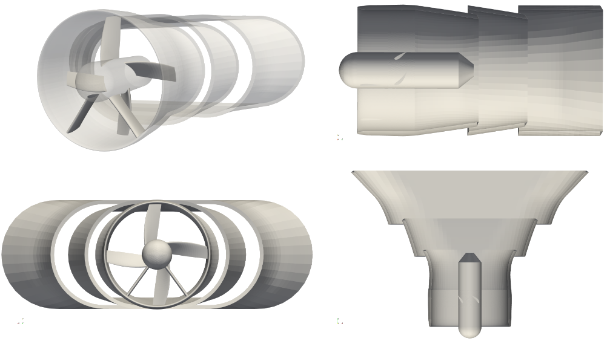
Fig. 1 Three-dimensional representation of the kinetic turbine (top left) with two guide vanes arranged at the bottom and four rotor blades; diffuser is designed in three parts; machine’s side view without blades (top right); view from the front (bottom left); top view without blades (bottom right)
Fig. 2 shows a simulation result of an optimized machine. The streamlines are coloured with the velocity magnitude. Backflow regions are visulaized as magenta coloured iso volumes. According to figure Fig. 2, the flow enters the machine through the inlet section and, additionally, through the vents. Behind the hub only small vortices occur. The flow follows the opening of the diffuser. According to theoretical considerations, the optimized machine shows a flap at the end of the third diffuser section.
{kind=link}
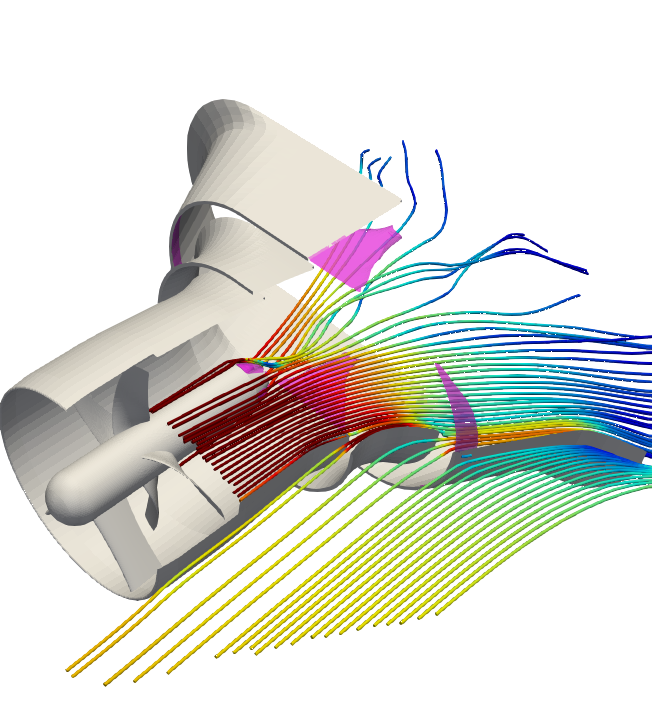
Fig. 2 Three-dimensional representation of the kinetic turbine including the simulated flow field; streamlines are coloured with the velocity magnitude from low (blue) to high (red); backflow volume shown as magenta coloured iso volume;
[Tismer_2020] contains a more detailed description including a documented optimization. [Mastaller_2023] gives additional theoretical background and unsteady simulation results of an optimized candidate.
Parameterization
Fig. 3 shows the parameterization of the diffuser geometry. The guide vane and runner area is marked by the rectangle drawn as a dash-dot line. For the design of the kinetic turbine, the control points shown are fixed (empty rectangles) or movable (filled rectangles). Each gray edge of the diffuser is defined by a B-spline of second order. The first and last spline each have three movable and one fixed control point. The former fulfills the constraint of a smooth transition from the guide vane and runner area to the diffuser shape, the latter limits the horizontal (\(x\)-direction) expansion of the diffuser. The transition from guide vane and runner area to the diffuser is made differentiable by fixing the second control point in the \(x\)-direction. All three control points in the second diffuser section can move. The first point at each of the first and third diffuser part can only be move in the \(x\)-direction. The overlap in \(z\)-direction of the parts is fixed. Overall, the diffuser is parameterized with \(15\) degrees of freedom (DOF). In the following, DOFs in the \(x\)-direction are denoted by \(E_{p,q}\) and in the \(z\)-direction by \(L_{p,q}\). With the index \(p\), the first, second and third diffuser section is characterized by the indices \(0\), \(1\) and \(2\), respectively. The second index \(q\) corresponds to the first to fourth and first to third control points per diffuser part by the indices \(0.0\), \(1.0\), \(1.5\) and \(2.0\) and \(0.0\), \(1.0\) and \(2.0\), respectively.
Fig. 3 also contains parts of the unstructured mesh blocks (black solid line). The remaining space within the investigated area (black dotted line) is meshed with a block structured grid. In this case, the hybrid mesh reduces the number of cells and the complexity of the block structure. An adequate number of elements is required upstream and downstream of the hub, which is, in case of a pure block structured approach, completely imprinted on the inflow section. Due to the small hub in relation to the diffuser, fewer elements are generally required near the hub than on the diffuser. The unstructured areas decouple the mesh. In addition, the geometric deformation of the diffuser mesh in the \(x\)-direction can be compensated by tightening the inner blocks. This results in more tetrahedral elements; at the same time, the hexahedrons remain more uniform in the structured areas.
{kind=link}
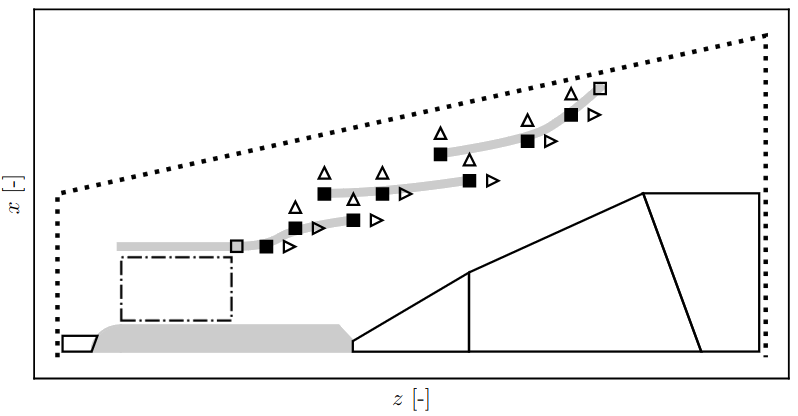
Fig. 3 Schematic representation of the kinetic turbine in half-sided view with boundaries (gray) and the bladed space (black dash-dotted line); control points (rectangles) are fixed (empty) or moveable (filled); unstructured grid blocks drawn as black solid line; coupling (black dotted line) to the coarsely meshed far-field via a general grid interface
Fig. 4 contains the parameterization of a mid-surface section for the runner. Each section is defined by four DOFs. The outlet angle \(\beta_o\) and the position (sickling) in the circumferential direction \(\phi r_o\) can be changed. The index \(o\) defines the position of the cut in the spanwise direction. The distribution of the thickness is
where \(t\) follows the parameter value of the meanline. Additionally, the parameter \(X\) (not shown in figure) shifts the maximum thickness \(T\) to the inlet or outlet. This means that only symmetrical thickenings can be generated.
{kind=link}
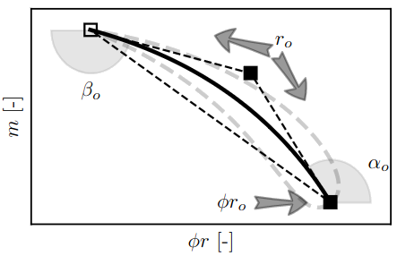
Fig. 4 Control polygon (black dashed) of the center line (black solid) with fixed (empty) and movable (filled) control points; entry and exit angles \(\alpha_o\) and \(\beta_o\) as well as deflection \(r_o\) can be changed; position of the cut in circumferential direction can be changed via DOF \(\phi r_o\)
The runner blade is generated from three sections parameterized according to Fig. 4. Fig. 5 shows a schematic sketch of the three-dimensional blade. Visible edges are shown as thick black lines, hidden edges as thin gray lines and mid-surface sections as dotted lines. The three directions \(\phi r\), \(m\) and \(r\) correspond to the arrows on the hub. The sections at the hub (\(s=0\)), center (\(s=0.5\)) and shroud (\(s=1\)) or index \(o=0\), \(o=1\) and \(o=2\) are connected by a B-Spline surface. According to Fig. 5, the span direction is not necessarily the radial direction.
{kind=link}
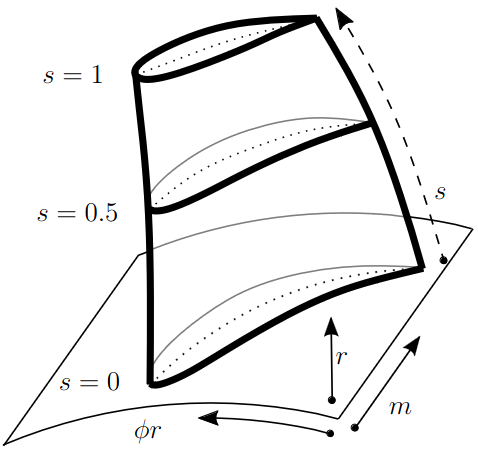
Fig. 5 Three-dimensional view of the impeller blade from three sections; hub section (thin black) with corresponding directional arrows; span direction of the blade (dashed directional arrow); visible (thick black) and hidden (thin gray) edges (solid); mean sections (dotted) shown for each section
The maximum thickening \(T\) of the mean line or mean surface from equation (1) is variable in spanwise direction. A blending
with the blending function \(h(s)\) is defined by the fixed maximum thickenings \(T_0\) and \(T_1\) at the hub and shroud. Fig. 6 visualizes the function
with
and
for different parameter values of \(G\) and \(C\). For \(G = 0.01\) and \(C = 2\), the result is a linear blending that corresponds to the black dots. An increase in \(G\) bulges the blending symmetrically and makes it “s”-shaped according to the dashed lines from white to black. Changing \(C\) creates an asymmetrical blending in the direction of the hub or shroud (color gradient from dark to light). The steeper the gradient of \(h(s)\), the faster the change in thickening in the spanwise direction.
{kind=link}
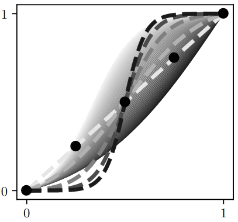
Fig. 6 Blending function of the thickness distribution; linear blending shown as black dots; variation of \(G\) and \(C\) shown by dashed lines and color gradient, respectively
Parameter symbols and labels
Table 1 gives the mapping between math symbols and constValue labels. Additionally, the min and max value for each DOF is shown. It is important to mention that all DOFs are scaled. Therefore, the values does not directly correspond to the dimension of an angle or a length.
Symbol |
Label |
Min |
Max |
|---|---|---|---|
\(r_0\) |
|
0.05 |
0.8 |
\(r_1\) |
|
0.2 |
0.9 |
\(r_2\) |
|
0.2 |
0.8 |
\(\phi r_0\) |
|
-0.04 |
0.4 |
\(\phi r_1\) |
|
-0.04 |
0.4 |
\(\phi r_2\) |
|
-0.04 |
0.4 |
\(\alpha_1\) |
|
-0.2 |
0.3 |
\(\alpha_2\) |
|
-0.2 |
0.2 |
\(\alpha_3\) |
|
-0.2 |
0.2 |
\(\beta_1\) |
|
-0.2 |
0.3 |
\(\beta_2\) |
|
-0.2 |
0.3 |
\(\beta_3\) |
|
-0.2 |
0.2 |
\(\Delta L_{0,1}\) |
|
-0.10 |
0.6 |
\(\Delta L_{0,1.5}\) |
|
0.1 |
0.9 |
\(\Delta E_{0,1.5}\) |
|
0.05 |
0.7 |
\(\Delta E_{0,2}\) |
|
0.05 |
0.4 |
\(\Delta L_{1,0}\) |
|
0.2 |
0.4 |
\(\Delta L_{1,1}\) |
|
0.1 |
0.9 |
\(\Delta E_{1,0}\) |
|
0.05 |
0.2 |
\(\Delta E_{1,1}\) |
|
-0.10 |
0.9 |
\(\Delta E_{1,2}\) |
|
0.1 |
0.9 |
\(\Delta L_{2,0}\) |
|
0.3 |
0.72 |
\(\Delta L_{2,1}\) |
|
0.1 |
0.9 |
\(\Delta E_{2,0}\) |
|
0.05 |
0.1 |
\(\Delta E_{2,1}\) |
|
-0.10 |
0.9 |
\(\Delta L_{2,1.5}\) |
|
0.25 |
0.99 |
\(\Delta E_{2,1.5}\) |
|
0.25 |
0.99 |
\(X\) |
|
0.20 |
0.8 |
\(G\) |
|
0.01 |
5.0 |
\(C\) |
|
0.30 |
3.0 |
Simulation setup
The simulation area of the kinetic turbine consists of an area close to the turbine and a far-field. Fig. 7 shows the calculation area schematically. The far-field contains the dotted area near the turbine. A Dirichlet boundary condition for the velocity and a gradient boundary condition for the pressure are set at the inlet \((E)\); correspondingly, a gradient boundary condition and a Dirichlet boundary condition are specified at the outlet \((A)\). The connection of the near-field with the far-field is made via a generalized mesh interface at the coupling surfaces \((F_1, G_1)\), \((F_2, G_2)\) and \((F_3, G_3)\). By meshing the two areas separately, it is possible to mesh the far-field area more coarsely and, thus, save computation time. The two boundary surfaces at the top and bottom of the far-field (both summarized in \((N)\)) are defined as a frictionless wall. The detail at the bottom right of Fig. 7 shows the area close to the turbine with the guide vane and runner area as well as the subsequent diffuser. The guide vane, runner, hub and diffuser are only drawn in half section due to symmetry. All \((S)\) boundary surfaces are walls with a noslip condition. The part of the \((S)\) surface in the runner area (hub and blade) rotates according to the angular velocity. The coupling surface \((F_4, G_4)\) at the runner inlet is also a generalized mesh interface. There is a mixing plane interface between the guide vane and runner \((L_5, M_5)\) or runner and diffuser \((L_6, M_6)\).
{kind=link}
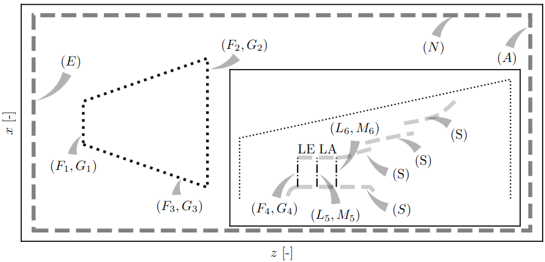
Fig. 7 Schematic representation of the simulation area consisting of near-field (dotted cone) and far-field (dashed rectangle); boundary conditions shown on boundary surfaces (letters without indices) and coupling surfaces (letters with indices); guide vane (LE) and runner (LA) area including diffuser and hub (both dashed gray) in detail
Running the case
Pull and run the latest stable container by:
docker pull atismer/dtoo:stable
docker run -it atismer/dtoo:stable
Change to the case directory by
cd /dtOO/demo/canada
and list the files in the directory by:
ls
E1_12685.xml Mesh build.py geo gmshMeshFile init.xml machine.xml machineSave.xml xml
The kinetic turbine is setup with the old XML (Extensible Markup Language)
interface of the framework. Therefore, the main XML file machine.xml, the
state files machineSave.xml and E1_12685.xml as well as the files
located in directory xml are necessary to create the machine. The Mesh
directory contains the fixed far-field mesh in CGNS format.
Using build.py
The Python script
automatically creates the predefined state E1_12685 of the kinetic turbine.
It is executed within the container by:
python3 build.py
Note
You have to set two MPI environment variables. This is necessary because
within the container you are root. This has to be done before running
any simulation by:
export OMPI_ALLOW_RUN_AS_ROOT=1
export OMPI_ALLOW_RUN_AS_ROOT_CONFIRM=1
Description of build.py
The first part of the script controls the framework. First the framework is imported with
from dtOOPythonSWIG import *
and the log file build.log is created with
logMe.initLog("build.log")
As previously mentioned, the kinetic turbine is created using the XML interface. The input and state XML file is loaded by the parser with
dtXmlParser.init("machine.xml", "E1_12685.xml")
and a reference to the parser is kept in the variable parser by
parser = dtXmlParser.reference()
Afterwards both XML files are parsed
parser.parse()
and the construction plan (XML files) of the machine is read. All objects are stored in STL (C++ Standard Template Library) like objects. And those objects have to be created for base ojects, DOFs, functions, geometries, mesh parts, simulation cases and plugins by, respectively,
bC = baseContainer()
cV = labeledVectorHandlingConstValue()
aF = labeledVectorHandlingAnalyticFunction()
aG = labeledVectorHandlingAnalyticGeometry()
bV = labeledVectorHandlingBoundedVolume()
dC = labeledVectorHandlingDtCase()
dP = labeledVectorHandlingDtPlugin()
before objects can be appended to the containers. All DOFs are created by the member function:
parser.createConstValue(cV)
The specific state (put simply: the values of the DOFs) is loaded to the DOFs by:
parser.loadStateToConst("E1_12685", cV)
All other objects are created by executing the command:
parser.destroyAndCreate(bC, cV, aF, aG, bV, dC, dP)
At this point, the complete machine is available within the containers. The last step is to create the meshes and setup the simulation case by:
dC.get("ingvrudtout_coupled_of").runCurrentState()
This step may take time, because the whole meshing procedure is performed.
The second part is the simulation of the flow field using OpenFOAM. In order to also handle this in Python, the PyFoam library is used. The import of the packages
from PyFoam.Applications.Decomposer import Decomposer
from PyFoam.Applications.WriteDictionary import WriteDictionary
from PyFoam.Applications.Runner import Runner
from PyFoam.Applications.ClearCase import ClearCase
from PyFoam.Applications.PackCase import PackCase
and definition of the case and state name
caseName = "ingvrudtout_coupled_of"
stateName = "E1_12685"
provides the necessary functions and attributes to correctly call PyFoam. For the kinetic turbine the simulation cases are created as folders according to the pattern:
ingvrudtout_coupled_of_<stateLabel>
<stateLabel> represents the name of the currently loaded state. At first,
the case is decomposed by
Decomposer(
args=[
caseName+"_"+stateName,"4","--method=scotch","--clear","--silent"
]
)
and then ready to simulate the first 100 iterations as a laminar problem by:
WriteDictionary(
args=[caseName+"_"+stateName+"/system/controlDict", "endTime", "100"]
)
WriteDictionary(
args=[caseName+"_"+stateName+"/system/controlDict", "writeInterval", "100"]
)
WriteDictionary(
args=[
caseName+"_"+stateName+"/constant/turbulenceProperties",
"RAS['turbulence']",
"off"
]
)
Runner(
args=[
"--silent",
"--autosense-parallel",
"simpleFoam", "-case", caseName+"_"+stateName
]
)
The second step is the simulation of the following 900 iterations as a turbulent problem by executing
WriteDictionary(
args=[caseName+"_"+stateName+"/system/controlDict",
"endTime", "1000"
]
)
WriteDictionary(
args=[
caseName+"_"+stateName+"/system/controlDict",
"writeInterval", "1000"
]
)
WriteDictionary(
args=[
caseName+"_"+stateName+"/constant/turbulenceProperties",
"RAS['turbulence']", "on"
]
)
Runner(
args=[
"--silent",
"--autosense-parallel",
"simpleFoam", "-case", caseName+"_"+stateName
]
)
and
Runner(
args=[
'--silent',
'reconstructPar', '-latestTime', "-case", caseName+"_"+stateName
]
)
to reconstruct the parallel simulation case. The two commands
ClearCase(
[
'--keep-postprocessing',
'--processors-remove',
'--remove-analyzed',
'--keep-postprocessing',
'--clear-history',
'--keep-last',
caseName+"_"+stateName
])
and
PackCase([caseName+"_"+stateName, '--last'])
are optional. They clear and pack the simulation case. This is useful when performing an optimization to save disk space.
Creating an own state
The creation of a new state of the kinetic turbine starts with some already
described functions of build.py. At first, the framework, the parser and
the containers have to be defined by:
from dtOOPythonSWIG import *
logMe.initLog("build.log")
dtXmlParser.init("machine.xml", "E1_12685.xml")
parser = dtXmlParser.reference()
parser.parse()
bC = baseContainer()
cV = labeledVectorHandlingConstValue()
aF = labeledVectorHandlingAnalyticFunction()
aG = labeledVectorHandlingAnalyticGeometry()
bV = labeledVectorHandlingBoundedVolume()
dC = labeledVectorHandlingDtCase()
dP = labeledVectorHandlingDtPlugin()
parser.createConstValue(cV)
It is good practice to start from an existing state. Therefore, we use the
E1_12685 state as initialization for all DOFs:
parser.loadStateToConst("E1_12685", cV)
At this point the DOFs are created and initialized. It can also be validated by:
parser.currentState()
>>> 'E1_12685'
The output is exactly the loaded state. We can start to modify any
constValue listed in Table 1. One can easily iterate over
all defined DOFs within a simple for-loop:
for i in cV:
print(i.getLabel())
>>> cV_n
[...]
>>> cV_ru_alpha_1_ex_0.0
[...]
>>> cV_ru_stepNResplinePoints
Somewhere in the long list we found the inlet angle at the hub that is
labelled as cV_ru_alpha_1_ex_0.0 according to Table 1. A
call of the ()-operator
cV["cV_ru_alpha_1_ex_0.0"]()
>>> 0.04964900016784668
gives the current value of the DOF. We can change the angle by:
cV["cV_ru_alpha_1_ex_0.0"].setValue(0.05)
It is important to update the geometry of the runner mesh channel when the blade geometry is changed. Otherwise the mesh might not be correctly generated. The update is performed by:
dP.get("ru_adjustDomain").apply()
Put simply, the command adjusts other dependent DOFs to generate a valid mesh. Checking again the state by
parser.currentState()
>>> ''
shows that the current state is empty. We create a new state and validate that everything works correctly by:
parser.setState("iahr2024_state")
parser.currentState()
>>> 'iahr2024_state'
Optionally, we can extract the state and create a new state file by:
parser.extract("iahr2024_state", cV, "iahr2024_state.xml")
This creates the XML file iahr2024_state.xml within the directory. If no
new file is desired, a call to
parser.write(cV)
inserts the new state in the currently loaded state file (E1_12685.xml).
From this point, we can generate the whole machine by
parser.destroyAndCreate(bC, cV, aF, aG, bV, dC, dP)
and create the case directory by
dC.get("ingvrudtout_coupled_of").runCurrentState()
Of course, we also have to adjust the variable names, if we still use the above explained commands:
caseName = "ingvrudtout_coupled_of"
stateName = "iahr2024_state"
Additionally, we have to simulate the new case written in the directory
ingvrudtout_coupled_of_iahr2024_state. This can be done with the above
described commands of PyFoam.
Optimization of a Hydrofoil
This example optimizes a hydrofoil that is defined with 3 Degrees Of Freedom (DOFs). The optimization is performed with the differential evolution algorithm of scipy.
The fastest way to run the optimization of the hydrofoil is to execute:
pip install foamlib && export OSLO_LOCK_PATH=/tmp && export FOAM_SIGFPE=0 && python3.12 -m doctest build.py
Within the command foamlib is installed that is necessary to control OpenFoam in Python. The variable OSLO_LOCK_PATH defines the lock directory for oslo.concurrency. This should be a directory with fast I/O access. The second variable FOAM_SIGFPE is optional, but might be useful for preventing OpenFoam to fail with a floating point exception. Finally, this script is executed using the doctest module of Python.
The optimizer is imported from scipy and the interested reader is referred to [SciPy_2025]
>>> from scipy.optimize import differential_evolution
The callback function optimizeHydFoil of the optimizer executes all steps of the hydrofoil case. In the end, the fitness value of the hydrofoil is set as return value of the callback. Additionally, an exception handling catches all exceptions and returns a defined fitness value in case of an error.
>>> def optimizeHydFoil(x):
... try:
... hf = hydFoil( alpha_1=x[0], alpha_2=x[1], t_mid=x[2] )
... hf.Geometry()
... hf.GeometryMesh()
... hf.Mesh()
... hf.Simulate()
... fit = hf.Evaluate()
... except:
... logging.warning("Catch Exception")
... fit = hydFoil.FailedFitness()
... return fit
Define the bounds of the DOFs for the optimization.
>>> bounds = [(150.0, 170.0), (155.0, 175.0), (0.01, 0.10),]
Call the optimizer with the callback function. The number of candidates is low to have a fast code example.
>>> result = differential_evolution(
... optimizeHydFoil,
... bounds,
... popsize=1,
... maxiter=0,
... polish=False
... )
(of_A1_1) Running simpleFoam...
(of_A1_1) Running simpleFoam...
(of_A1_2) Running simpleFoam...
(of_A1_2) Running simpleFoam...
(of_A1_3) Running simpleFoam...
(of_A1_3) Running simpleFoam...
(of_A1_4) Running simpleFoam...
(of_A1_4) Running simpleFoam...
(of_A1_5) Running simpleFoam...
(of_A1_5) Running simpleFoam...
Output the final result of the optimization.
>>> logging.info(
... "Optimum found at (alpha_1, alpha_2, t_mid) = (%f, %f, %f) with %f"
... %
... ( result.x[0], result.x[1], result.x[2], result.fun )
... )
- class dtOO.demo.hydFoilOpt.build.hydFoil(alpha_1=100.0, alpha_2=130, t_mid=0.1)[source]
Create, mesh, simulate and evaluate a hydrofoil.
This class holds all functions to create a hydrofoil with an inlet angle, outlet angle and a blade thickness. Fig. 8 shows a sketch of the hydrofoil.
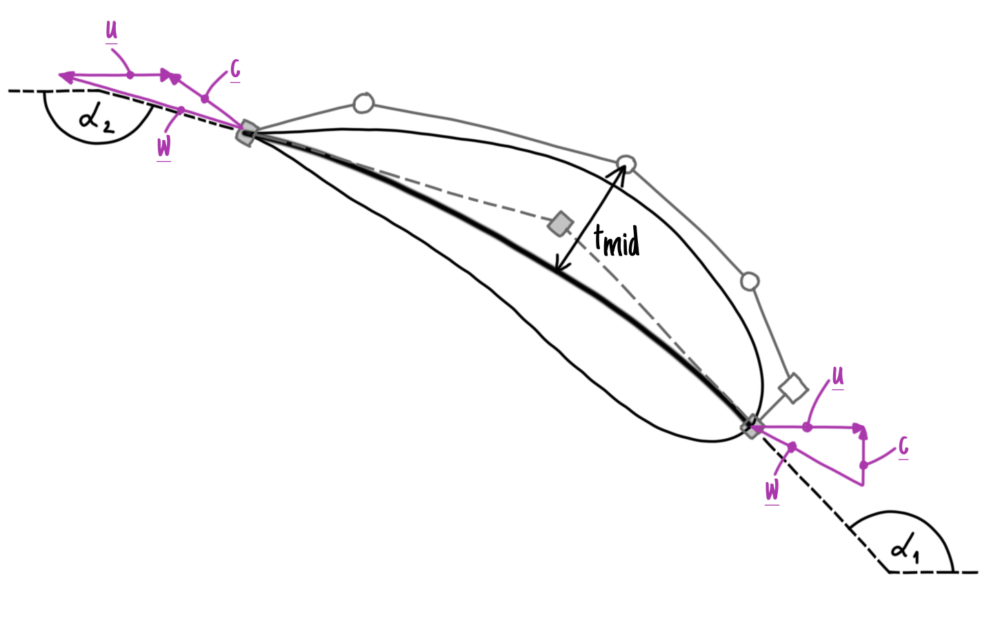
Fig. 8 Hydrofoil’s sketch including mean line (solid thick black line) and final shape (solid thin black line); B-Splines, that are used for constructing the meanline and final shape, are shown as solid and dashed gray thin lines; velocity triangles at inlet and outlet of the hydrofoil are colored in magenta; the DOFs, namely \(\alpha_1\), \(\alpha_2\), and \(t_{mid}\), are shown and labeled in black
The simulation of the hydrofoil is performed in the relational frame of reference. It means that all velocities in the CFD simulation correspond to \(w\). Therefore, when evaluating hydrofoil’s efficiency and head, the transformation
\[c = w + u = w + 2 \pi n R \approx w + 18.84 \frac{m}{s}\]is necessary to get the absolute velocity \(c\). The hydrofoil is designed for a design head of \(0.8 m\). The fitness function is calculated based on head deviation and efficiency.
- Parameters:
alpha_1 (float) – Inlet angle.
alpha_2 (float) – Outlet angle.
t_mid (float) – Blade’s thickness.
- Evaluate()[source]
Evaluate the simulation.
The simulation is evaluated using the pyDtOO library. Additionally, the “patchToCsv” application is used to create csv files of the boundaries.
The fitness function is calculated based on head deviation and efficiency. Efficiency is given by the equation
\[\Delta \eta = 1 - \frac{F_y u}{\rho g H Q}\]with \(F_y\), \(u\), \(\rho\), \(g\), \(H\), and \(Q\) that corresponds to force in \(y\)-direction, rotational speed, density, gravitational constant, simulated head, and discharge. The deviation in head is calculated by
\[\Delta H = \frac{|H-H_d|}{H_d}\]with \(H_d\) that corresponds to design head. Then, the fitness value \(f\) is defined as:
\[f = \Delta H + \Delta \eta \mathrm{.}\]It is clear: the lower the fitness function \(f\), the better the candidate.
- Returns:
Fitness value of this candidate.
- Return type:
float
- static FailedFitness()[source]
Failed fitness.
Returns the value that represents a failed design.
- Returns:
Fitness for a failed design.
- Return type:
float
- Geometry()[source]
Create hydrofoil’s geometry.
The main objects of baseContainer, analyticFunction, and analyticGeometry are created. Objects that are necessary or interesting are appended to the
hydFoilOpt.build.hydFoil.bV,hydFoilOpt.build.hydFoil.aF, andhydFoilOpt.build.hydFoil.aG.
- GeometryMesh()[source]
Create additional hydrofoil’s geometry for meshing.
Create additional objects that are necessary for creating the mesh. These are mainly object’s of the mesh block that is created around the blade. This block is meshed as a structured block.
- H_ = 0.2
Height of the mesh in \(m\).
- Type:
float
- L_ = 4.0
Length of the mesh in \(m\).
- Type:
float
- Mesh()[source]
Create hydrofoil’s mesh.
Create the topology for the hydrofoil’s mesh. Additionally, define number of elements for edges and surfaces, define minimum and maximum element lengths for unstructured meshing algorithms, and label mesh parts.
- R_ = 2.0
Radius of the blade cut in \(m\) where this hydrofoil is located.
- Type:
float
- Simulate()[source]
Perform the simulation.
Perform the simulation using foamlib. The simulation runs for 500 iterations as a laminar simulation. Afterwards, it is switched to turbulent mode.
- aF
Container object of dtOOPythonSWIG.analyticFunction.
- Type:
dtOOPythonSWIG.labeledVectorHandlingAnalyticFunction
- aG
Container object of dtOOPythonSWIG.analyticGeometry.
- Type:
dtOOPythonSWIG.labeledVectorHandlingAnalyticGeometry
- bC
base container.
- Type:
dtOOPythonSWIG.baseContainer
- bV
Container object of dtOOPythonSWIG.boundedVolume.
- Type:
dtOOPythonSWIG.labeledVectorHandlingBoundedVolume
- cV
Container object of dtOOPythonSWIG.constValue.
- Type:
dtOOPythonSWIG.labeledVectorHandlingConstValue
- c_mi_ = 5.77
Absolute velocity at inlet in \(\frac{m}{s}\)
- Type:
float
- container
Bundle object.
- Type:
dtOOPythonSWIG.dtBundle
- dC
Container object of dtOOPythonSWIG.dtCase.
- Type:
dtOOPythonSWIG.labeledVectorHandlingDtCase
- dP
Container object of dtOOPythonSWIG.dtPlugin.
- Type:
dtOOPythonSWIG.labeledVectorHandlingDtPlugin
- nB_ = 4
Number of blades in which this hydrofoil is located.
- Type:
float
- n_ = 90.0
Rotational speed in \(min^{-1}\).
- Type:
float
- state_
State label.
- Type:
str
- sys = <module 'sys' (built-in)>
{kind=link}
Axial Runner tistos
Create, simulate, and evaluate an axial runner. This machine is the test case of [Eyselein_2025], [Rentschler_2024], [Raj_2024], and [Ebel_2024]. For the publication [Ebel_2024], the data set is provided in [axial_turbine_database]. This GitHub repository serves as the database for this demonstration case.
Run this tutorial by executing:
export OSLO_LOCK_PATH=/tmp && export FOAM_SIGFPE=0 \
&& python3.12 -m doctest build.py
Import logging package and create a configuration:
>>> import logging
>>> logging.basicConfig(
... format='%(asctime)s %(levelname)s : %(message)s',
... datefmt='%Y-%m-%d %H:%M:%S',
... level=logging.INFO
... )
Import necessary classes from dtOO:
>>> from dtOOPythonSWIG import (
... logMe,
... dtXmlParser,
... baseContainer,
... labeledVectorHandlingConstValue,
... labeledVectorHandlingAnalyticFunction,
... labeledVectorHandlingAnalyticGeometry,
... labeledVectorHandlingBoundedVolume,
... labeledVectorHandlingDtCase,
... labeledVectorHandlingDtPlugin,
... lVHOstateHandler,
... )
Import packages from pyDtOO:
>>> from pyDtOO import (
... dtScalarDeveloping,
... dtForceDeveloping,
... dtDeveloping
... )
>>> from pyDtOO import dtClusteredSingletonState as stateCounter
Import foamlib to control OpenFoam within Python:
>>> import foamlib
Import other default packages, necessary for evaluation and system calls:
>>> import numpy as np
>>> import sys
>>> import os
Clone repository [axial_turbine_database], if necessary:
>>> clone = "git clone https://github.com/ihs-ustutt/axial_turbine_database.git"
>>> if not os.path.isdir("./axial_turbine_database"):
... logging.info("Clone repository.")
... ret = os.system(clone)
Set up dtClusteredSingletonState configuration:
>>> stateCounter.PREFIX = 'T1'
>>> stateCounter.CASE = 'tistos_ru_of'
>>> stateCounter.DATADIR = './axial_turbine_database/runData'
Define the variables stored in the database:
>>> stateCounter.ADDDATA = [
... 'P',
... 'dH',
... 'eta',
... 'VCav',
... 'history',
... 'islandID',
... ]
Define default constructors for variables:
>>> stateCounter.ADDDATADEF = [
... {"tl": 0, "n": 0, "vl": 0}, # P
... {"tl": 0, "n": 0, "vl": 0}, # dH
... {"tl": 0, "n": 0, "vl": 0}, # eta
... {"tl": 0, "n": 0, "vl": 0}, # VCav
... {}, # history
... -1, # islandID
... ]
Define mapping between database’s parameters and constValue label. The
parameters in runData are in the same sequence as the mapping:
>>> cVArr = [
... {'label': 'cV_ru_alpha_1_ex_0.0', 'min': -0.155, 'max': 0.025},
... {'label': 'cV_ru_alpha_1_ex_0.5', 'min': -0.19, 'max': -0.01},
... {'label': 'cV_ru_alpha_1_ex_1.0', 'min': -0.19, 'max': -0.01},
... {'label': 'cV_ru_alpha_2_ex_0.0', 'min': -0.08, 'max': 0.1},
... {'label': 'cV_ru_alpha_2_ex_0.5', 'min': -0.08, 'max': 0.1},
... {'label': 'cV_ru_alpha_2_ex_1.0', 'min': -0.08, 'max': 0.07},
... {'label': 'cV_ru_offsetM_ex_0.0', 'min': 1.0, 'max': 1.5},
... {'label': 'cV_ru_offsetM_ex_0.5', 'min': 1.0, 'max': 1.5},
... {'label': 'cV_ru_offsetM_ex_1.0', 'min': 1.0, 'max': 1.5},
... {'label': 'cV_ru_ratio_0.0', 'min': 0.4, 'max': 0.6},
... {'label': 'cV_ru_ratio_0.5', 'min': 0.4, 'max': 0.6},
... {'label': 'cV_ru_ratio_1.0', 'min': 0.4, 'max': 0.6},
... {'label': 'cV_ru_offsetPhiR_ex_0.0', 'min': -0.15, 'max': 0.15},
... {'label': 'cV_ru_offsetPhiR_ex_0.5', 'min': -0.15, 'max': 0.15},
... {'label': 'cV_ru_offsetPhiR_ex_1.0', 'min': -0.15, 'max': 0.15},
... {'label': 'cV_ru_bladeLength_0.0', 'min': 0.4, 'max': 0.8},
... {'label': 'cV_ru_bladeLength_0.5', 'min': 0.6, 'max': 1.0},
... {'label': 'cV_ru_bladeLength_1.0', 'min': 0.8, 'max': 1.3},
... {'label': 'cV_ru_t_le_a_0', 'min': 0.005, 'max': 0.06},
... {'label': 'cV_ru_t_le_a_0.5', 'min': 0.005, 'max': 0.06},
... {'label': 'cV_ru_t_le_a_1', 'min': 0.005, 'max': 0.06},
... {'label': 'cV_ru_t_mid_a_0', 'min': 0.005, 'max': 0.06},
... {'label': 'cV_ru_t_mid_a_0.5', 'min': 0.005, 'max': 0.06},
... {'label': 'cV_ru_t_mid_a_1', 'min': 0.005, 'max': 0.06},
... {'label': 'cV_ru_t_te_a_0', 'min': 0.005, 'max': 0.06},
... {'label': 'cV_ru_t_te_a_0.5', 'min': 0.005, 'max': 0.06},
... {'label': 'cV_ru_t_te_a_1', 'min': 0.005, 'max': 0.06},
... {'label': 'cV_ru_u_mid_a_0', 'min': 0.4, 'max': 0.6},
... {'label': 'cV_ru_u_mid_a_0.5', 'min': 0.4, 'max': 0.6},
... {'label': 'cV_ru_u_mid_a_1', 'min': 0.4, 'max': 0.6},
... ]
Initialize a dtClusteredSingletonState object for state 21260:
>>> sc = stateCounter(21260)
Create log file:
>>> logMe.initLog('build-'+sc.state()+'.log')
'build-T1_21260.log'
Initialize XML parser with construction and save file:
>>> parser = dtXmlParser.init("machine.xml", "machineSave.xml").reference()
Parse XML files:
>>> parser.parse()
Create basic container:
>>> bC = baseContainer()
>>> cV = labeledVectorHandlingConstValue()
>>> aF = labeledVectorHandlingAnalyticFunction()
>>> aG = labeledVectorHandlingAnalyticGeometry()
>>> bV = labeledVectorHandlingBoundedVolume()
>>> dC = labeledVectorHandlingDtCase()
>>> dP = labeledVectorHandlingDtPlugin()
Create constValue instances and load the templateState:
>>> parser.createConstValue(cV)
>>> parser.loadStateToConst("templateState", cV)
Iterate over all parameters from database and set the value in the
correspoding constValue object. The array cVArr reuturns the
correct label:
>>> cc = 0
>>> for anObj in sc.objective():
... cV[ cVArr[cc]['label'] ].setValue( anObj )
... cc = cc + 1
Create geometry, apply the ru_adjustDomain plugin, and create geometry
again. The plugin adjusts the runner domain by changing the DOFs; therefore,
it necessary to create the geometry twice:
>>> parser.destroyAndCreate(bC, cV, aF, aG, bV, dC, dP)
>>> dP.get('ru_adjustDomain').apply()
>>> parser.destroyAndCreate(bC, cV, aF, aG, bV, dC, dP)
Make a state in the container of constValue:
>>> lVHOstateHandler().makeState(sc.state())
Define empty dicts for power, head, efficiency, and cavitation volume:
>>> P = {}
>>> dH = {}
>>> eta = {}
>>> Vcav = {}
Create geometry, perform simulation, and perform evaluation for each operating point:
Note
Depending on the OpenFoam installation, it might be necessary to adjust the decomposition method, e.g. to
fc.decompose_par_dict['method'] = 'metis'
or any other method. As already mentioned, it depends on the current installation.
>>> for i in ["tl" , "n", "vl"]:
... #
... # Create OpenFoam case
... #
... dC.get('tistos_ru_of_'+i).runCurrentState()
... #
... # Initialize ``foamlib`` object; define parallel solution on 4
... # processors; simulate 100 iterations laminar with a ``faceLimited``
... # scheme
... #
... fc = foamlib.FoamCase( 'tistos_ru_of_'+i+'_'+sc.state() )
... fc.decompose_par_dict['method'] = 'scotch'
... fc.decompose_par_dict['numberOfSubdomains'] = 4
... fc.control_dict['writeInterval'] = 100
... fc.control_dict['endTime'] = 100
... fc.turbulence_properties["RAS"]["turbulence"] = False
... fc.fv_schemes['gradSchemes']['none'] = 'faceLimited Gauss linear 0.33'
... fc.fv_schemes['gradSchemes']['grad(p)'] = 'faceLimited Gauss linear 0.33'
... fc.fv_schemes['gradSchemes']['grad(U)'] = 'faceLimited Gauss linear 0.33'
... fc.fv_schemes['divSchemes']['div(phi,U)'] = \
... 'Gauss linearUpwindV faceLimited Gauss linear 0.33'
... fc.run()
... #
... # Simulate until 1000 iterations reached as a turbulent simulation with
... # a ``cellLimited`` scheme
... #
... fc.control_dict['writeInterval'] = 1000
... fc.control_dict['endTime'] = 1000
... fc.turbulence_properties["RAS"]["turbulence"] = True
... fc.fv_schemes['gradSchemes']['none'] = 'cellLimited Gauss linear 0.33'
... fc.fv_schemes['gradSchemes']['grad(p)'] = 'cellLimited Gauss linear 0.33'
... fc.fv_schemes['gradSchemes']['grad(U)'] = 'cellLimited Gauss linear 0.33'
... fc.fv_schemes['divSchemes']['div(phi,U)'] = \
... 'Gauss linearUpwindV cellLimited Gauss linear 0.33'
... fc.run()
... #
... # Reconstruct the case
... #
... fc.reconstruct_par()
... #
... # Extract the rotation speed from the case
... #
... omega = np.abs(
... foamlib.FoamFile(fc.path/'constant/MRFProperties')['MRF_RU']['omega']
... )
... try:
... #
... # Read data from ``postProcessing`` folder
... #
... Q_ru_dev = dtScalarDeveloping(
... dtDeveloping(str(fc.path/'postProcessing/Q_ru_in/100')).Read()
... )
... pIn_ru_dev = dtScalarDeveloping(
... dtDeveloping(str(fc.path/'postProcessing/ptot_ru_in/100')).Read()
... )
... pOut_ru_dev = dtScalarDeveloping(
... dtDeveloping(str(fc.path/'postProcessing/ptot_ru_out/100')).Read()
... )
... Vcav_dev = dtScalarDeveloping(
... dtDeveloping(str(fc.path/'postProcessing/V_CAV/100')).Read()
... )
... F_dev = dtForceDeveloping(
... dtDeveloping(str(fc.path/'postProcessing/forces')).Read(
... {'force.dat' : ':,4:10', 'moment.dat' : ':,4:10', '*.*' : ''}
... )
... )
... #
... # Calculate power, head, efficiency, and cavitation volume; average
... # simulation results over 100 iterations
... #
... P[i] = F_dev.MomentMeanLast(100)[2] * omega
... dH[i] = (pOut_ru_dev.MeanLast(100) - pIn_ru_dev.MeanLast(100)) / 9.81
... eta[i] = P[i] / (1000. * 9.81 * dH[i] * Q_ru_dev.MeanLast(100) )
... Vcav[i] = Vcav_dev.MeanLast(100)
... #
... # Check if number of iterations reached and if it is a turbine not a
... # pump
... #
... if fc[-1].name != '1000':
... raise ValueError('Max number of iterations not reached.')
... if np.abs(eta[i]) > 1:
... raise ValueError('Pump detected.')
... #
... # Handle exceptions
... #
... except Exception as e:
... logging.error('Catch exception : %s', e)
Compare simulation results with the results in the database. Accept an error of 1 %, otherwise report error:
>>> for valLab, valVar in zip(['P', 'dH', 'eta',],[P, dH, eta,]):
... ref = sc.readDict(valLab)
... for i in ['n', 'vl', 'tl',]:
... diff = np.abs( (ref[i] - valVar[i]) / ref[i] )
... logging.info("Difference for %s[%s] : %f %%" % (valLab, i, 100.*diff))
... if diff > 0.01:
... print("Difference for %s[%s] : %f %% > 1%%!" % (valLab, i, 100.*diff))
Radial Turbine radMeridional
With this class the geometries and mesh topologies of different parametrized flow machines can be created. The class contains the following creation methods:
createMeridional()
createBlade()
createLayerRegion()
The creation methods are responsible for generating the different geometries and topologies. The inputs of these methods are handed to them from outside of the class through configuration dictionaries. They call multiple subclasses from the dtOOPythonApp package, which perform the specific tasks required for geometry generation. The python files of the subclasses are located in the following directory:
./dtOO/scripts/python/dtOOPythonApp/builder
The following diagram illustrates the main methods and their relationships in the class.
{kind=link}
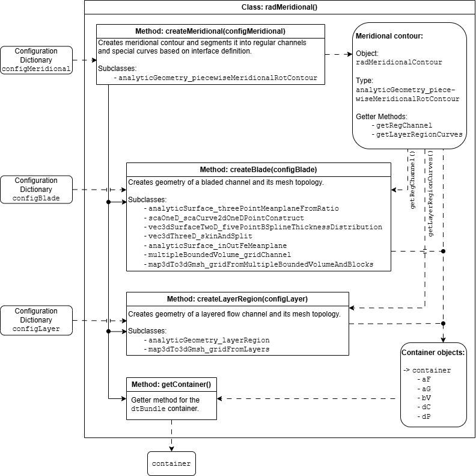
Fig. 9 Creation methods of the radMeridional class and their relationships. Solid lines represent a sequence of activities, dashed lines represent the flow of data. Boxes with rounded edges represent data types.
The meridional contour of the whole machine is defined by hub and shroud curves. The createMeridional method separates these, through defined interfaces, into regular channels and the curves which are used in the layered region. The following subclass is used:
The object radMeridionalContour of the subclass
analyticGeometry_piecewiseMeridionalRotContour is created, from which the
regular channels and the curves of the layered region can be returned with the methods
getRegChannel and getLayerRegionCurves.
Based on the created meridional contour, bladed channels and a layered region can be built using the two other create methods. Within these methods, the geometries are created and mesh settings are applied. The final meshing is performed outside of the class by returning the necessary bounded volumes.
Bladed channels (i.e., runner and guide vane channels) can be created using
the createBlade method. The defined blades are generated inside the regular
channels that are passed to the method from the radMeridionalContour object
with the method getRegChannel.
The resulting geometry and mesh represent a periodic segment of the blade channel.
The blade is surrounded by transfinite and structured mesh blocks, while the rest
of the channel is meshed unstructured.
The following subclasses are used:
analyticSurface_threePointMeanplaneFromRatio
scaOneD_scaCurve2dOneDPointConstruct
vec3dSurfaceTwoD_fivePointsBSplineThicknessDistribution
The createLayerRegion method takes the bounding curves of the layered region from the
radMeridionaContour object with the method getLayerRegionCurves and
creates a segment of a flow channel. This flow channel consists of transfinite
layer regions on the hub and shroud faces and an unstructured region in between.
The following subclasses are used:
The created geometries, functions and others are stored in dtBundle containers.
The main container object can be returned from the main class with the method getContainer().
The bounded volumes and case data, which are needed for building meshes from the topologies
and openFOAM-cases can be returned from this object.
- class dtOO.demo.radMeridional.radMeridional.radMeridional[source]
Create geometries and meshes of a radial flow machine.
- container
Initialization of the dtBundle.
- Type:
dtBundle
- bC
dtOO base container.
- Type:
baseContainer
- cV
Labeled vector handling of constant values.
- Type:
lvH_constValue
- aF
Labeled vector handling of analytic functions.
- Type:
lvH_analyticFunction
- aG
Labeled vector handling of analytic geometries.
- Type:
lvH_analyticGeometry
- bV
Labeled vector handling of bounded volumes.
- Type:
lvH_boundedVolume
- dC
Labeled vector handling of cases.
- Type:
lvh_dtCase
- dP
Labeled vector handling of plugins.
- Type:
lvH_dtPlugin
- radMeridionalContour
Object that creates the meridional contour.
Examples
This example creates geometries and mesh topologies of a parameterized radial machine. The machine consists of the following geometries:
Guide Vane Channel
Runner Channel
Draft Tube Cone
The following figure shows the resulting meshes of the different geometries:
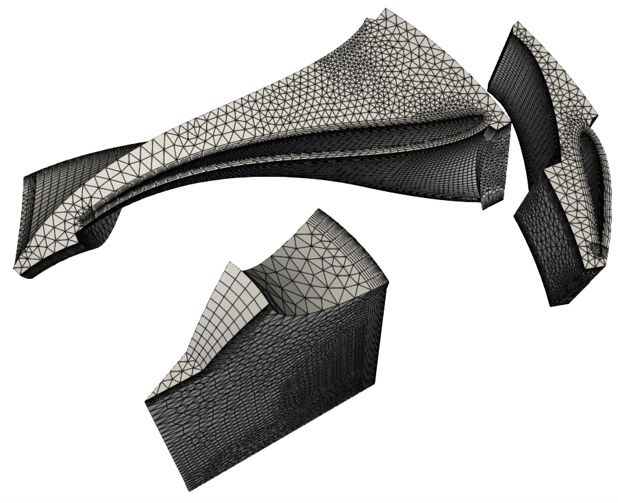
Fig. 10 Final geometries and meshes of this example, with guide vane (top right), runner (top left), and draft tube cone (bottom).
The meridional contour of the machine is defined with the method
createMeridional()through hub and shroud curves. The guide vane and runner channels are created from regular channels with the methodcreateBlade(). The draft tube cone is created as a layered region from its bounding curves with the methodcreateLayerRegion().Import the dtOOPythonSWIG-package.
>>> import dtOOPythonSWIG as dtOO
Meridional Contour
The meridional contour of the flow machine is created with the method
createMeridional()through its hub and shroud curves.The hub and shroud curves are defined in separate lists named
hubCurvesandshroudCurves. The curves have to be created so that their direction is the same as the flow direction of the machine in turbine mode. The sequence of the curves in the lists must also correspond to this direction.In the following documentation the flow direction of the machine in turbine mode is referred to as the streamwise or downstream direction. The opposing direction is referred to as the upstream direction.
The following figure shows the hub and shroud curves with their corresponding numbers in the
hubCurvesandshroudCurveslists. The blue arrow represents the downstream direction.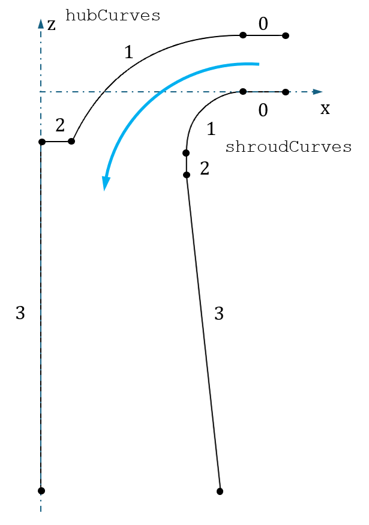
Fig. 11 Hub and shroud curves of the meridional channel. Numbering correlates with the numbering in the
hubCurvesandshroudCurveslists.In this example, the first two of the hub and the shroud curves form the regular channels. These are channel volumes which have six faces, each of them bound by 4 curves. The bladed channel are defined inide of them. The first curves build the regular channel for the guide vane, and the second curves build the regular channel for the runner. Because the runner channel of a radial turbine is highly curved, one possible parameterization of those curves is provided, which enables a simple generation of different channel geometries. The parametrization is shown in figure Fig. 12.
The contour of the runner’s meridional channel has a flow deflection from the radial inlet to the axial outlet. In order to achieve this, the meridional hub and shroud curves of the runner channel are defined from four control points.
The first and fourth control points form the start and the end points of the curves. Their positions are parameterized through the diameters \(d_{inlet}\), \(d_{out,hub}\) and \(d_{out,shroud}\) and the heights \(h_{inlet}\), \(h_{hub}\) and \(h_{shroud}\). Through the second and third control points, the contour of the channel is set. Their positions are defined through offsets from the first and fourth control points with the lengths \(l_{hub,0}\), \(l_{hub,1}\), \(l_{shroud,0}\), and \(l_{shroud,1}\). With the angle \(\gamma_{hub1}\), the outlet angle of the hub curve can be set.
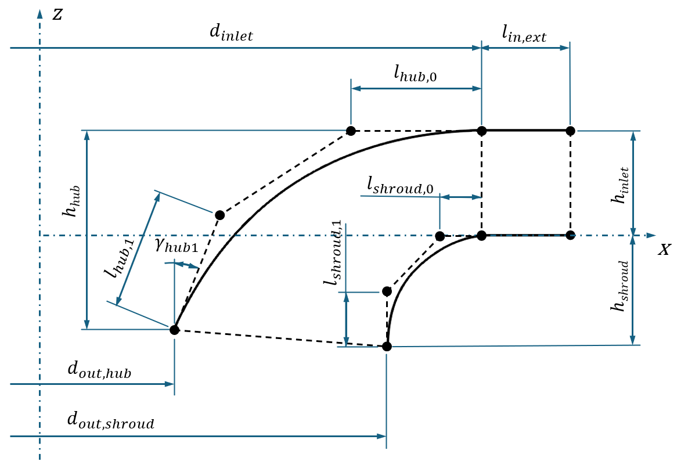
Fig. 12 Sketch of the first two defined hub and shroud curves, which build the guide vane and runner channels. Degrees of freedom are included and labeled.
Table 2 gives the mapping between math symbols in Fig. 12 and the naming of the variables in this example.
Table 2 Mapping between math symbols and variable names. Symbol
Label
\(d_{inlet}\)
d_inlet\(l_{in,ext}\)
l_inExt\(d_{out,hub}\)
d_outHub\(d_{out,shroud}\)
d_outShroud\(l_{hub,0}\)
l_hub0\(l_{hub,1}\)
l_hub1\(\gamma_{hub1}\)
angle_hub1\(l_{shroud,0}\)
l_shroud0\(l_{shroud,1}\)
l_shroud1\(h_{inlet}\)
h_inlet\(h_{hub}\)
h_hub\(h_{shroud}\)
h_shroudDefine the parameters of the first two hub and shroud curves:
>>> d_inlet = 2.58 >>> l_inExt = 0.27 >>> d_outHub = 0.4 >>> d_outShroud = 1.865 >>> l_hub0 = 0.38 >>> l_hub1 = 0.38 >>> angle_hub1 = 65 * np.pi/180 >>> l_shroud0 = 0.13 >>> l_shroud1 = 0.18 >>> h_inlet = 0.36 >>> h_hub = 0.68 >>> h_shroud = 0.38
In the following lines, the displacements for the third control point of the hub curve are calculated:
>>> dx_hub1 = np.cos(angle_hub1)*l_hub1 >>> dz_hub1 = np.sin(angle_hub1)*l_hub1
In the following two code blocks, the hub and shroud curves are defined in the lists
hubCurvesandshroudCurves. The control points are created asdtPoint3and the curves asbSplineCurve_pointConstructOCCobjects. The parameterization above is used to create the first two hub and shroud curves.Four hub curves are defined here. The first two are defined with the parameterization shown in Fig. 12. The third hub curve extends to an x-coordinate of zero and forms the shaft end of the turbine. The fourth hub curve extends in the negative z-direction at a radius of zero.
>>> hubCurves = [ ... dtOO.analyticCurve( ... dtOO.bSplineCurve_pointConstructOCC( ... dtOO.vectorDtPoint3() ... << dtOO.dtPoint3(+(d_inlet/2 + l_inExt), +0.00, +h_inlet) ... << dtOO.dtPoint3(+d_inlet/2, +0.00, +h_inlet), ... 1 ... ).result() ... ), ... dtOO.analyticCurve( ... dtOO.bSplineCurve_pointConstructOCC( ... dtOO.vectorDtPoint3() ... << dtOO.dtPoint3(+d_inlet/2, +0.00, +h_inlet) ... << dtOO.dtPoint3(+d_inlet/2-l_hub0, +0.00, +h_inlet) ... << dtOO.dtPoint3(+d_outHub/2+dx_hub1, +0.00, -h_hub+dz_hub1+h_inlet) ... << dtOO.dtPoint3(+d_outHub/2, +0.00, -h_hub+h_inlet), ... 2 ... ).result() ... ), ... dtOO.analyticCurve( ... dtOO.bSplineCurve_pointConstructOCC( ... dtOO.vectorDtPoint3() ... << dtOO.dtPoint3(+d_outHub/2, +0.00, -h_hub+h_inlet) ... << dtOO.dtPoint3(+0.00, +0.00, -h_hub+h_inlet), ... 1 ... ).result() ... ), ... dtOO.analyticCurve( ... dtOO.bSplineCurve_pointConstructOCC( ... dtOO.vectorDtPoint3() ... << dtOO.dtPoint3(+0.00, +0.00, -h_hub+h_inlet) ... << dtOO.dtPoint3(+0.00, +0.00, -2.55), ... 1 ... ).result() ... ) ... ]
Four shroud curves are defined. The first two are defined from the parameterization in Fig. 12. The third shroud curve extends vertically in the negative z-direction. The fourth shroud curve forms the opening of the draft tube cone.
>>> shroudCurves = [ ... dtOO.analyticCurve( ... dtOO.bSplineCurve_pointConstructOCC( ... dtOO.vectorDtPoint3() ... << dtOO.dtPoint3(+(d_inlet/2 + l_inExt), +0.00, +0.00) ... << dtOO.dtPoint3(+d_inlet/2, +0.00, +0.00), ... 1 ... ).result() ... ), ... dtOO.analyticCurve( ... dtOO.bSplineCurve_pointConstructOCC( ... dtOO.vectorDtPoint3() ... << dtOO.dtPoint3(+d_inlet/2, +0.00, +0.00) ... << dtOO.dtPoint3(+d_inlet/2-l_shroud0, +0.00, +0.00) ... << dtOO.dtPoint3(+d_outShroud/2, +0.00, -h_shroud+l_shroud1) ... << dtOO.dtPoint3(+d_outShroud/2, +0.00, -h_shroud), ... 2 ... ).result() ... ), ... dtOO.analyticCurve( ... dtOO.bSplineCurve_pointConstructOCC( ... dtOO.vectorDtPoint3() ... << dtOO.dtPoint3(+d_outShroud/2, +0.00, -h_shroud) ... << dtOO.dtPoint3(+d_outShroud/2, +0.00, -0.54), ... 1 ... ).result() ... ), ... dtOO.analyticCurve( ... dtOO.bSplineCurve_pointConstructOCC( ... dtOO.vectorDtPoint3() ... << dtOO.dtPoint3(+d_outShroud/2, +0.00, -0.54) ... << dtOO.dtPoint3(+1.15, +0.00, -2.55), ... 1 ... ).result() ... ) ... ]
Create a
generateobject from the class radMeridional:>>> generate = radMeridional()
The inputs of the method
createMeridional()are the lists with the hub and shroud curves (hubCurvesandshroudCurves) and a configuration dictionary, which specifies the positions and curvatures of the interface curves. Define the configuration dictionary for the meridional contour.>>> configMeridional = { ... "label" : "radMeridionalContour", ... ... "interface_hub" : [[1, 0.00], ... [1, 0.7],], ... "interface_shroud" : [[1, 0.00], ... [2, 0.5],], ... "interface_curvature" : [[0.0, 0.5, 1], ... [0.4, 0.5, -1],], ... }
Create the meridional channel:
>>> generate.createMeridional(configMeridional, hubCurves, shroudCurves)
Bladed Channels
The bladed channel geometries are created as a number of mesh blocks surrounding the blade geometry and a grid channel, which connects to the mesh blocks. The mesh blocks are meshed structured, while the grid channel is meshed unstructured.
The bladed channel is created with the method
createBlade(). This method takes a configuration dictionary, which contains the necessary geometry parameters, as input.The key
regChannelin the dictionary specifies in which regular channel the blade is created. The number of blades can be set withnBlades. Based on the number of blades, the corresponding periodic segment with one blade is built.The blade geometry is defined with the parameters
spanwiseCuts_mp,alpha_1,alpha_2,ratioX,deltaY,offXandoffY,spanwiseCuts_td,t_le,u_le,t_mid,u_mid,t_teandu_te. The parameterization is further described in [Fraas_2025].The guide vane blade is defined with the following configuration dictionary. Here, the lists of blade parameters contain only one value; this results in a constant cross section of the blade along its spanwise direction. The conformal mapping’s parameter
adjustRadiusis set toFalse. The inputorientationcan be1or-1is used to set the orientation of the blade in the regular channel. If the blade extends in the positive u-direction of the regular channel, it is set to1. If the blade extends in the negative u-direction this value has to be set to-1.>>> configGuideVane = { ... "label" : "gv", ... "regChannel" : 0, ... "nBlades" : 24, ... ... "spanwiseCuts_mp" : [0.00, 1.00,], ... "alpha_1" : [round((np.pi/180.) * -55.0, 4)], ... "alpha_2" : [round((np.pi/180.) * -16.0, 4)], ... "ratioX" : [0.5], ... "deltaY" : [0.12], ... "offX" : [-0.046], ... "offY" : [0.077], ... ... "spanwiseCuts_td" : [0.00, 1.00,], ... "t_le" : [0.01], ... "u_le" : [0.00], ... "t_mid" : [0.03], ... "u_mid" : [0.20], ... "t_te" : [0.01], ... "u_te" : [0.80], ... ... "adjustRadius" : False, ... "orientation" : -1, ... }
Create the guide vane geometry:
>>> generate.createBlade(configGuideVane)
The mesh of the created topology is shown in the following figure.
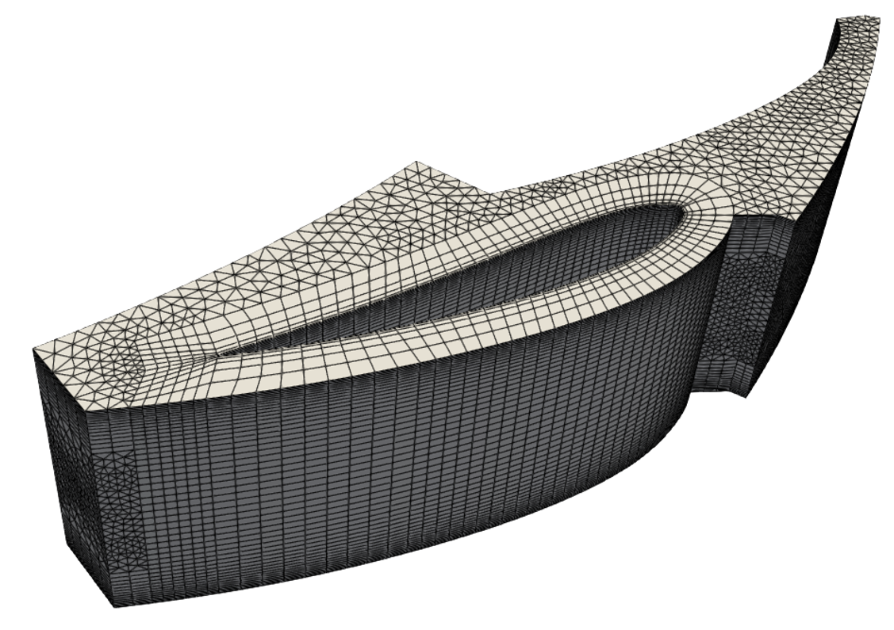
Fig. 13 Mesh of the guide vane segment.
The runner geometry is created with the method
createBlade(). The runner has 15 blades and is mapped onto the second regular channel. Here, each blade parameter contains multiple values and, therefore, the blade varies in the spanwise direction. The parameteradjustRadiusis set toTrue.>>> configRunner = { ... "label" : "ru", ... "regChannel" : 1, ... "nBlades" : 15, ... "spanwiseCuts_mp" : [0.00, 0.33, 0.66, 1.00,], ... "alpha_1" : [ ... round((np.pi/180.) * 90., 4), ... round((np.pi/180.) * 75., 4), ... round((np.pi/180.) * 52., 4) ... ], ... "alpha_2" : [ ... round((np.pi/180.) * 45., 4), ... round((np.pi/180.) * 31., 4), ... round((np.pi/180.) * 32., 4), ... round((np.pi/180.) * 10., 4) ... ], ... "ratioX" : [ ... 0.65, ... 0.70, ... 0.35, ... 0.22 ... ], ... "deltaY" : [ ... 0.80, ... 0.55, ... 0.90, ... 0.55 ... ], ... "offX" : [ ... 0.125, ... 0.125, ... 0.0 ... ], ... "offY" : [ ... 0.065, ... 0.085, ... 0.035 ... ], ... "spanwiseCuts_td" : [0.00, 1.00,], ... "t_le" : [0.020,0.018], ... "u_le" : [0.00], ... "t_mid" : [0.04,0.03], ... "u_mid" : [0.50], ... "t_te" : [0.02], ... "u_te" : [0.80], ... "adjustRadius" : True, ... "orientation" : 1, ... }
Create the runner geometry:
>>> generate.createBlade(configRunner)
The mesh of the created topology is shown in the following figure.
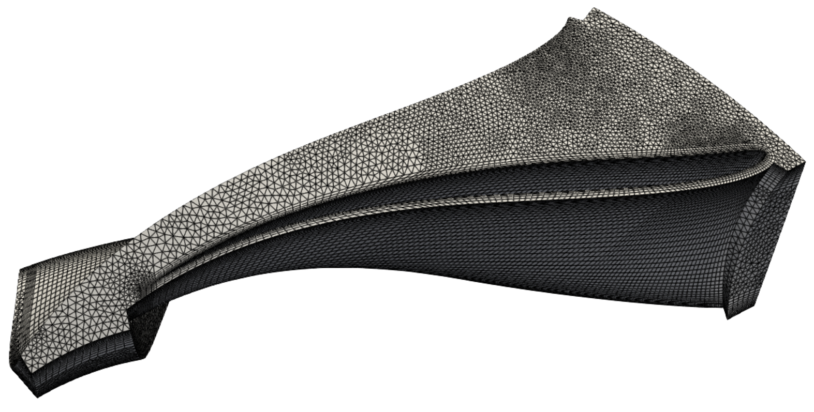
Fig. 14 Mesh of the runner segment.
Draft Tube Cone
The mesh of the draft tube cone is created as a combination of an unstructured region and structured regions on the hub and shroud walls. The method
createLayerRegion()is used for the generation and meshing of the geometry. Geometry settings for the layer region are passed to the class through a configuration dictionary.Create the configuration dictionary:
>>> configLayer = { ... "label" : "radMeridionalContour", ... "nSlices" : 15, ... "layer_thickness" : 0.2, ... "layer_supports" : [0.5], ... }
Create the layer region:
>>> generate.createLayerRegion(configLayer)
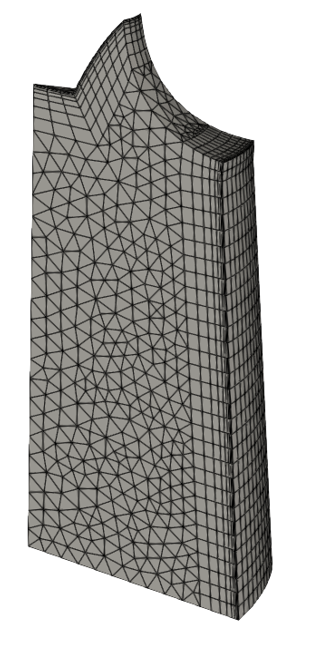
Fig. 15 Mesh of a draft tube cone segment.
Mesh Generation
The object
containercan be returned with the getter methodgetContainer().>>> container = generate.getContainer()
Mesh files and openFOAM-cases can be created from the vector-handler objects
bVanddCin thecontainerobject. They are returned with the commandscontainer.cptr_bV()andcontainer.cptr_dC(). The meshes of the different topologies can be created in GMSH with the following commands:bV[“gv_mesh”].makeGrid()
bV[“ru_mesh”].makeGrid()
bV[“meshLayers”].makeGrid()
- createMeridional(configM, hubCurves, shroudCurves)[source]
Create the regular channels and special hub and shroud curves.
This method:
Splits the hub and shroud curves at the interfaces.
Creates the interface curves.
Creates regular channels between the inlet and the interfaces.
Creates the special hub and shroud curves after the last interface.
- Parameters:
configM (dict) –
Dictionary containing the interface parameters with the following keys:
label (str): Label.
interface_hub (List[Tuple[int, float]]): Positions of the interfaces on the hub curves. Each entry represents:
interface_hub[i]: Interface numberinterface_hub[i][0]: Curve number where the interface is locatedinterface_hub[i][1]: Percentage along the curve (0 to 1)
interface_shroud (List[Tuple[int, float]]): Positions of the interfaces on the shroud curves. Each entry represents:
interface_shroud[i]: Interface numberinterface_shroud[i][0]: Curve number where the interface is locatedinterface_shroud[i][1]: Percentage along the curve (0 to 1)
interface_curvature (List[Tuple[float, float, int]]): Curvature of the interface curve from hub to shroud. Each entry represents:
interface_curvature[i]: Interface numberinterface_curvature[i][0]: Curvature offset point [%] from hub to shroudinterface_curvature[i][1]: Curvature as a percentage of the connection line lengthinterface_curvature[i][2]: Curvature direction
hubCurves (List[analyticGeometry]) – List of hub curves.
shroudCurves (List[analyticGeometry]) – List of shroud curves.
- Return type:
None
The regular channels and the special hub and shroud curves are created in this method. The inputs to this method are lists of hub and shroud curves (
hubCurvesandshroudCurves) and a configuration dictionary, which specifies the positions and curvatures of the interfaces.The following figure shows the hub and shroud curves with their respective indices in the
hubCurvesandshroudCurveslists.Fig. 16 Hub and shroud curves of the meridional channel. Numbering corresponds to the indices in the
hubCurvesandshroudCurveslists. The downstream direction is shown by the blue arrow.In this method, the builder class analyticGeometry_piecewiseRadMeridional is called. The object
radMeridionalContourof this class is created to manage the meridional contour. Based on the configuration dictionary, the interface curves are constructed with this object.Inlet and outlet interface curves are built independently of the settings in the configuration dictionary as straight lines. Between the start points of the first hub and shroud curves in the lists, an inlet curve is created. An outlet curve is created between the end points of the last hub and shroud curves.
The interface curves in the flow channel are defined through the nested lists in the configuration dictionary. The keys to these lists are
interface_hub,interface_shroud, andinterface_curvaturein the dictionary.The following figure shows the creation of the interface curves, with a focus on the curvature of the second interface curve.
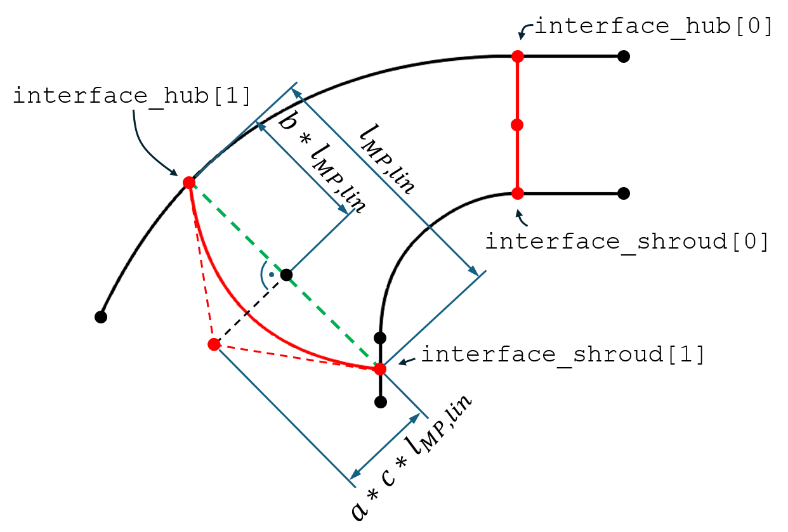
Fig. 17 Creation of the interface curves (red) between the hub and shroud curves (black), with the linear meanplane curve MP,lin (green).
Table 3 gives the mapping between the mathematical symbols in Fig. 17 and the naming of the list keys in this example.
Table 3 Mapping between mathematical symbols and variable names. Symbol
Label
\(a\)
interface_curvature[i][0]\(b\)
interface_curvature[i][1]\(c\)
interface_curvature[i][2]The lists
interface_hubandinterface_shrouddefine the positions of the start and end points of the interface curves on the hub and shroud curves.The lists are unpacked as follows:
interface_hub[i]: Start point of the i-th interface curve on the hub.interface_shroud[i]: End point of the i-th interface curve on the shroud.The lower-level lists specify the hub and shroud curves and the percentages of those curves’ parametric spans at which the start and end points of the interfaces are located:
interface_hub[i][0]: Index of the hub curve on which the start point is located.interface_hub[i][1]: Percentage of the hub curve’s parametric span where the start point is located.The interface curves are calculated by first creating a straight line MP,lin between the interface start and end points. Using the list
interface_curvature, a control point is computed that defines the curvature of the interface curve relative to MP,lin. Finally, the interface curve is constructed from the start and end points of the interface and the control point.The list
interface_curvatureis unpacked as follows. The highest level ofinterface_curvaturecorresponds to the index of the interface curve:interface_curvature[i]: Index of the interface.The lower level of the list defines the curvature of the interface as follows:
interface_curvature[i][0]: Control point offset as a percentage of the length of MP,lin.interface_curvature[i][1]: Control point base position as a percentage along MP,lin.interface_curvature[i][2]: Switch for the direction of the control point offset.When the start or end point of an interface lies on the span of a hub or shroud curve, that curve is split into two curves at this point. The resulting two curves then share their end or start points, respectively, with the interface.
With the interfaces, the meridional contour is partitioned into regular channels for the blade geometries and hub and shroud curves for the draft tube cone, which is build as a layered region.
The following figure shows the interfaces and the resulting regular channels, as well as the special curves that are not part of the regular channels. These curves form the boundary curves of the layered region.
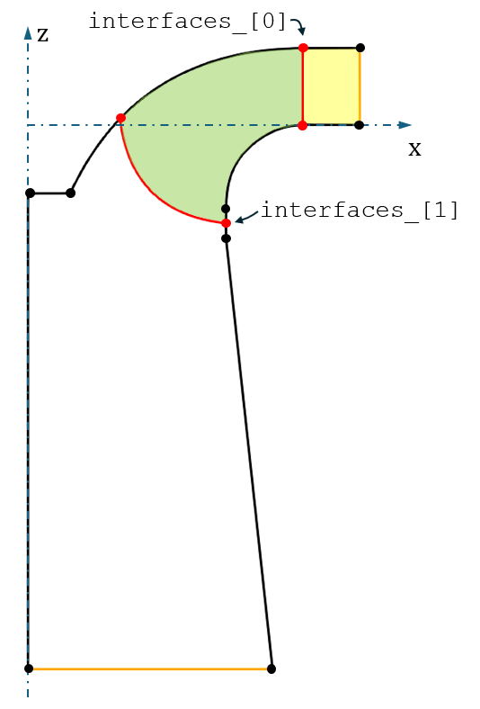
Fig. 18 The hub and shroud curves are shown in black, the interface curves in red, and inlet and outlet curves in orange. The layer region curves are downstream of the last interface curve. The two-dimensional faces of the first and second regular channel are colored in yellow and green, respectively.
The first regular channel is created from the inlet curve and the first interface curve, as well as the hub and shroud curves extending between them. The subsequent regular channels are defined between the sequential interfaces and the hub and shroud curves between them.
The layered region is built from the last interface curve, the outlet curve, and the hub and shroud curves, which are not part of the regular channels.
The object
radMeridionalContourof the class analyticGeometry_piecewiseMeridionalRotContour is instantiated as part of the radMeridional class. Through this object, the regular channels and the layer region curves can be accessed in the other methods.
- createLayerRegion(configL)[source]
Create a layered flow channel geometry.
This method:
Takes the special hub and shroud curves from the
radMeridionalContourobject.Creates transfinite faces on the hub and shroud curves.
Creates a multiple bounded volume inside the flow channel.
Applies mesh settings to the geometry regions.
- Parameters:
configL (dict) –
Dictionary containing the parameters for the layers with the following keys:
label (str): Label.
nSlices (int): Number of total slices. The geometry spans 360° / nSlices.
layer_thickness (float): Thickness of the layers on the hub and shroud curves.
layer_supports (List[float]): Number and positions of layer support points on each hub and shroud curve.
- Return type:
None
The mesh of the draft tube cone consists of six- or five-sided layer regions on the hub and shroud walls, as well as a multiple bounded volume inside the flow domain. The meshes in the layered regions are structured, while the multiple bounded volume is meshed using an unstructured algorithm.
The following figure shows the activity diagram of the class.
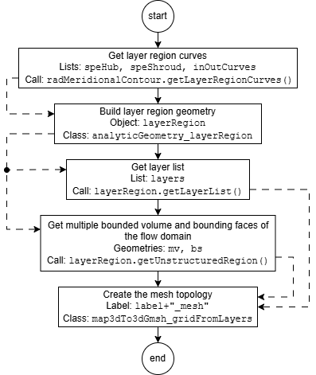
Fig. 19 Activity diagram of the method
createLayerRegion(). Solid lines indicate the sequence of activities, while dashed lines indicate the flow of objects between activities.The creation of the layers is specified using a configuration dictionary.
Get Layer Region Curves
The basis for the draft tube cone geometry are the hub and shroud curves, as well as the inlet and outlet curves of the flow domain. These curves are returned by the object
radMeridionaContourof the class analyticGeometry_piecewiseMeridionalRotContour, with the getter methodgetLayerRegionCurves().Fig. 20 shows the curves that are passed to the
createLayerRegion()method from the object created increateMeridional().
Fig. 20 Hub (speHub) and Shroud (speShroud) curves (black), as well as the inlet (red) and outlet (orange) curves of the draft tube cone.
Build Layer Region Geometry
The geometry generation is performed by the class analyticGeometry_layerRegion. In this class, the layers are created as two-dimensional surfaces on the wall curves and then rotated to generate volumes. The multiple bounded volume is created from the bounding surfaces to the layers in the flow domain.
A two-dimensional layer face is built on each hub and shroud curve that is not located at a radius of zero. Each layer face has four boundary curves. The first boundary curves are the hub or shroud curves themselves.
The generation of the bounding curves on the hub layer is shown in the following figure.
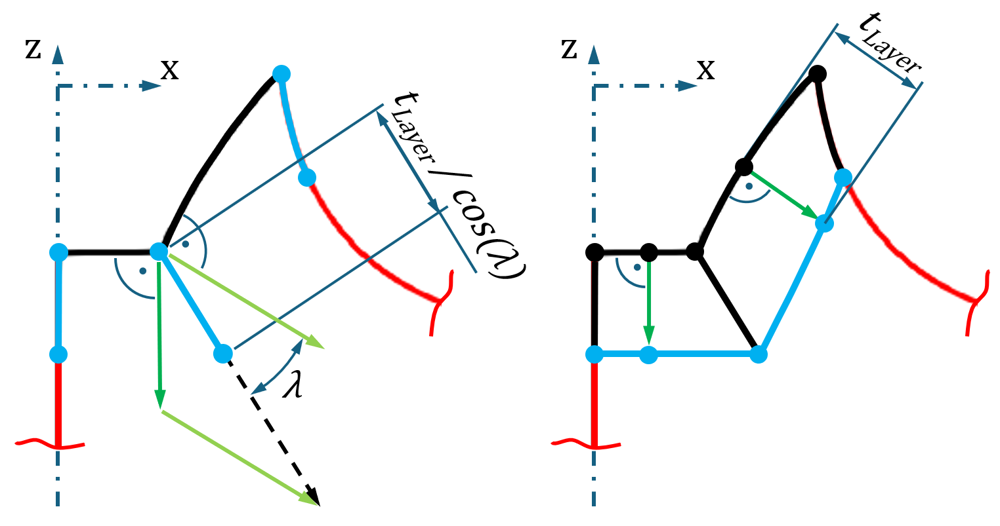
Fig. 21 Generation of layer bounding curves at the hub (black). Second and third bounding curves (left, blue), third bounding curve (right, blue).
The second and fourth boundary curves extend from the walls into the flow channel. For the first and last layer faces, at the hub and shroud, these correspond either to the inlet or outlet curves, or to a hub curve located at a radius of zero.
At the intersection points of two wall curves, boundary curves extending into the flow channel are constructed so they point in the mean normal direction of both curves. The length of the generated curves is determined by
layer_thickness(\(t_{Layer}\) in Fig. 22 and Fig. 21) in the configuration dictionary.The third boundary curves connect the second and fourth boundary curves inside the flow channel. They are constructed from the end points of the second and fourth boundary curves and support points. These support points are calculated by translating points on the hub and shroud curves in the normal direction of the curves. The positions of these points on the hub and shroud curves are defined using the list
layer_supports.Get Layer List
The following figure shows the resulting layer faces on all special hub and shroud curves.
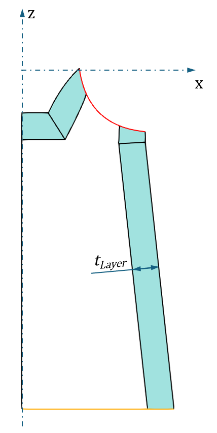
Fig. 22 Two-dimensional layer faces (blue) in the draft tube cone.
The layer volumes are created by rotating the layer faces by the angle resulting from the specified number of slices
nSlices(\(n_{Slices}\) in Fig. 23) in the configuration dictionary. The resulting layer volumes are six-sided, except when a hub curve is located at a radius of zero, which results in a five-sided layer. The following figure shows the volume of the draft tube cone.
Fig. 23 Volumes of the draft tube cone. Layer faces (blue), inlet (red), and outlet (orange).
With the method getLayerList of the class analyticGeometry_layerRegion, a nested list
layerscontaining the layer volumes and information indicating which layers are five-sided is returned. These lists are required to apply the mesh settings.Get Multiple Bounded Volume and Bounding Faces
With the class method getUnstructuredRegion, the multiple bounded volume
mvand a list of its bounding surfacesbscan be returned. The bounding faces consist of the inlet and outlet areas, which are not part of the layer volumes, as well as the layer faces connecting to the flow domain.The periodic faces are created as multiple bounded surfaces, which are bounded by the inner edges of the layer faces and a hub curve located at a radius of zero, if it exists. The following figure shows the bounding surfaces of the multiple bounded volume; the periodic faces are not shown for clarity.
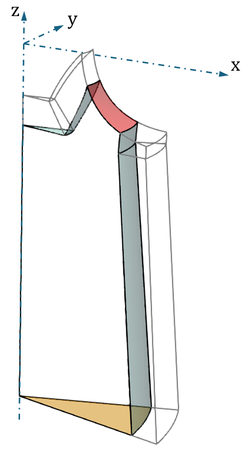
Fig. 24 Bounding faces of the multiple bounded volume with inlet (red), outlet (orange), and layer faces (blue). Periodic faces are not shown.
Create the Mesh Topology
The mesh settings for the regions are applied using the class map3dTo3dGmsh_gridFromLayers. The layer list
layers, the multiple bounded volumemvand its bounding surfacesbsare handed to the class.The edges on which mesh settings are applied are shown in Fig. 25.
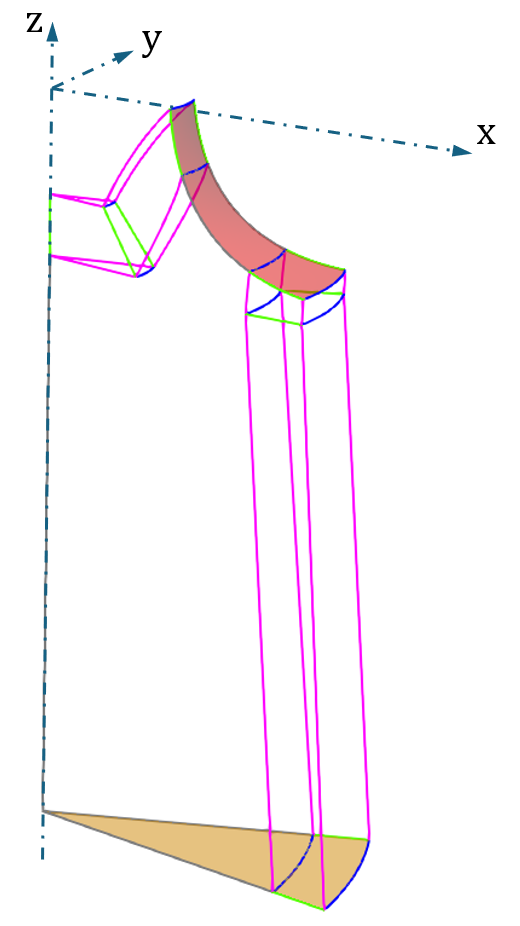
Fig. 25 Edges in the draft tube cone where mesh settings are applied, with circumferential edges (blue), streamwise edges (pink), and layer edges (green).
The layers are meshed with a grading from the wall surfaces toward the connecting faces of the multiple bounded volume. The element size on the wall is set using
firstElement. The number of elements on the layer edges extending from the wall to the multiple bounded volume (green) is set usingnElementsLayer.The maximum element size on the layer edges extending in the circumferential direction (blue) is set using
elementSize_circ. Similarly, the maximum element size on the edges extending along the walls and the edges parallel to them (pink) is set usingelementSize_sw.The mesh of the unstructured region can be controlled using GMSH’s parameters
charLengthMinandcharLengthMax, which define the minimum and maximum element sizes.The subclass pushes the created mesh topology into the
bVcontainer with the specified labellabel.A mesh resulting from this topology is shown in Fig. 15.
- createBlade(configB)[source]
Create geometry of a bladed channel and its mesh topology.
This method:
Creates the blade in the parameter space by combining the blade meanplane with the thickness distribution.
Creates six-sided mesh blocks surrounding the blade.
Creates six-sided mesh blocks at the blade’s trailing edge.
Creates FE-Meanplanes extending from the mesh blocks toward the inlet and outlet of the channel.
Maps the blade, the mesh blocks and the meanplanes onto a regular channel returned by the radMeridionalContour object.
Creates the grid channel as a multiple bounded volume defined by the FE-Meanplane and mesh block faces.
Applies mesh settings to the geometry regions.
The inputs are provided via a configuration dictionary. The entries of type
List[float]in this dictionary define the blade parameters along the blade span from hub to shroud.- Parameters:
configB (dict) –
Dictionary containing the parameters for the layers with the following keys:
label (str): Label.
regChannel (int): Number of the regular channel in which the blade is created.
nBlades (int): Number of total blades. Geometry will be 360°/nBlades.
spanwiseCuts_mp (List[float]): Percentages of spanwise cuts where the blade’s meanplane is created.
alpha_1 (List[float]): Blade inlet angles along spanwise direction from hub to shroud.
alpha_2 (List[float]): Blade outlet angles along spanwise direction from hub to shroud.
ratioX (List[float]): Ratio between expanse of the blades’ inlet and outlet angles for the x-direction along blade span.
deltaY (List[float]): Blade length in y direction along blade span.
offX (List[float]): Blade offsets in x-direction along blade span.
offY (List[float]): Blade offsets in y-direction along blade span.
spanwiseCuts_td (List[float]): Percentages of spanwise cuts where the blades’ thickness distribution is created.
t_le (List[float]): Thicknesses at the blades’ leading edge along the blades’ span.
u_le (List[float]): Percentage of the u-positions of the leading edge thicknesses along the blades’ span.
t_mid (List[float]): Thicknesses at the blades’ middle along the blades’ span.
u_mid (List[float]): Percentage of the u-positions of the thicknesses in the middle along the blades’ span.
t_te (List[float]): Thicknesses at the blades’ trailing edge along the blades’ span.
u_te (List[float]): Percentage of the u-positions of the trailing edge thicknesses along the blades’ span.
adjustRadius (bool): Enables adjusting the blades curvature along the channel radius.
orientation (int): Orientation of the blade in the regular channel. The values are:
1 : Blade is oriented in u-direction of the regular channel.
-1: Blade is oriented in negative u-direction of the regular channel.
- Return type:
None
This method creates a bladed channel and applies mesh settings to it. The channel consists of six-sided mesh blocks that surround the blade geometry and a grid channel formed by a multiple bounded volume that connects to the mesh blocks.
Multiple dtOO objects are created in this method. These objects are labeled and stored in the containers instantiated by this class. The objects can later be retrieved from the containers using their labels. The following activity diagram shows the operations performed and the flow of geometries from the operations where they are created to the operations where they are used.
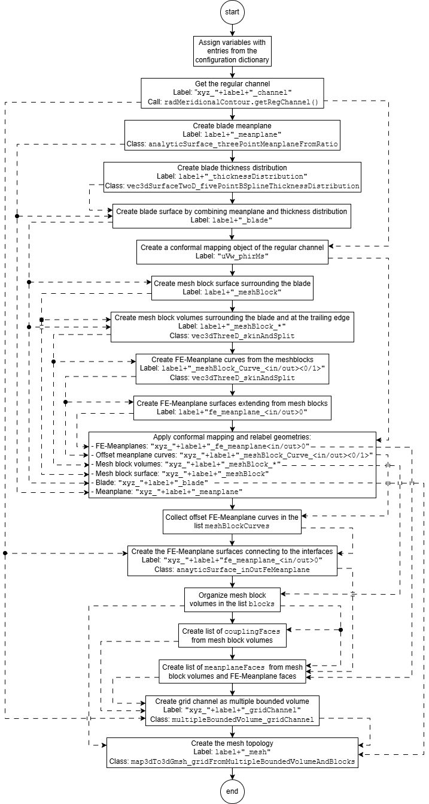
Fig. 26 Activity diagram of the method
createBlade(). Solid lines indicate the sequence of activities, while dashed lines indicate the flow of geometries between activities.The blade geometry is defined using a configuration dictionary. The key
labelis used as an identifier for the bladed channel. The main geometries created in this method receive the string value stored underlabelas part of their physical names.Get the Regular Channel
The key
regChannelin the dictionary specifies the regular channel in which the blade is created. The regular channel is returned by thegetRegChannel()method of theradMeridionalContourobject of class analyticGeometry_piecewiseMeridionalRotContour. The returned channel volume is labeled as follows:"xyz_" + label + "_channel"
Create Blade’s Mean Plane
The meanplane surface is created using the parameters
spanwiseCuts_mp,alpha_1,alpha_2,ratioX,deltaY,offX, andoffY. The class analyticSurface_threePointMeanplaneFromRatio creates the meanplane in the uv-parameter space. The blade surface is labeled with the following string:label + "_meanplane"
Create Blade’s Thickness Distribution
The thickness distribution is defined using the parameters
spanwiseCuts_td,t_le,u_le,t_mid,u_mid,t_te, andu_te. The class vec3dSurfaceTwoD_fivePointsBSplineThicknessDistribution defines the thickness distribution.The thickness distribution function in uv-parameter space is labeled as follows:
label + "_thicknessDistribution"
The parameterization of the blade geometry is described in more detail in [Fraas_2025].
The parameters of the meanplane and the thickness distribution are stored in lists. The list entries define the blade parameters along the blade span, from hub to shroud.
The meanplane and thickness distribution are created using scaOneD_scaCurve2dOneDPointConstruct objects, which define a functional relationship between the parameters and the spanwise direction. The constructor of a scaOneD_scaCurve2dOneDPointConstruct object requires a list of dtPoint2 objects and the function order as input.
To create these inputs, the parameter lists are passed to the method
fillInputList(). This method creates a list of dtPoint2 objects, which contain the parameter values from the input list and the corresponding percentage of the blade span at which those values are applied. Furthermore, the function order is defined in this method.Create Blade Surface
The blade is constructed by combining the meanplane contour and the thickness distribution using the dtOO class discreteAddNormal. The resulting blade is represented as a surface in uv-parameter space. The blade surface is labeled as follows:
label + "_blade"
Create Conformal Mapping Object
To map the geometries created in parameter space into the regular channel, a mapping object of type uVw_phirMs is prepared. Its settings are applied through a jsonPrimitive object. The mapping object is labeled
"uVw_phirMs".The configuration parameter
adjustRadiusis applied at this stage. The Boolean value associated with this parameter controls wheter the mapping of the blade geometry is scaled to the radius of the regular channel. If this value isFalsethe scaling is disabled.Create Mesh Block Surface
The mesh blocks are created by generating a mesh block surface that surrounds the blade at a normal distance of
meshBlock_thicknessfrom the blade surface.This is done in a manner similar to the combination of the meanplane and thickness distribution, using the dtOO class discreteAddNormal.
The mesh block surface is assigned the following label:
label + "_meshBlock"
Mesh Block Volumes and FE-Meanplane Curves
The class vec3dThreeD_skinAndSplit is used for multiple operations:
Creation of mesh block volumes surrounding the blade.
Creation of trailing edge mesh blocks.
Creation of FE-meanplane curves.
Create Mesh Block Volumes
The mesh block volumes are created by splitting the blade and mesh block surfaces along the direction specified by
splitDimand skinning the resulting faces together.Depending on the number of splits and their positions, specified by the input variable
splits, multiple mesh blocks are created. The volumes are labeled usinglabel + "_meshBlock"with an integer suffix.The numbering sequence of the mesh blocks follows the direction of the u-parameter of the blade surface, starting with the first mesh block at u = 0% and ending with the last mesh block at u = 100%.
The first mesh block surrounding the blade is labeled with the suffix
_1and the n-th mesh block with the suffix_n. The split direction can be changed from the u-direction by modifying the input variablesplitDim.The following figure shows a blade surrounded by mesh block volumes.
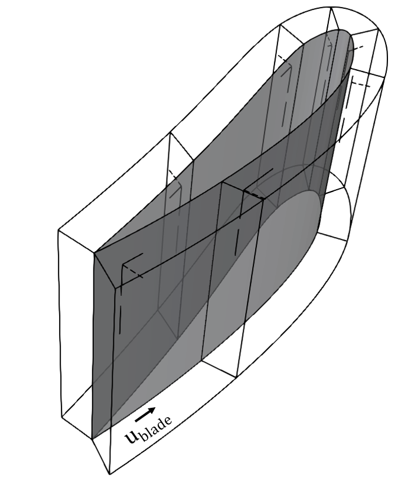
Fig. 27 Blade surface (grey) surrounded by mesh blocks.
In addition to the mesh blocks created around the blade surface, two mesh blocks are created downstream of the blade trailing edge.
The trailing edge mesh blocks are generated by creating curves that are tangentially offset from the blade surface and from the edges of the mesh blocks. These curves are skinned with their corresponding source curves to create surfaces. The resulting surfaces are then skinned together to create the trailing edge mesh block volumes.
The thickness of the trailing edge mesh blocks is specified by the input variable
tEMeshBlockThickness.The trailing edge mesh blocks are labeled
label + "meshBlock". The block connected to the first trailing edge mesh block receives the suffix_0, while the block connected to the last mesh block receives the suffix_n+1.The following figure shows the trailing edge mesh blocks connected to the surrounding mesh blocks.

Fig. 28 Blade surface (grey) with trailing edge mesh blocks.
Create FE-Meanplane Curves
Two offset meanplane curves are created in this subclass. One curve is offset in the tangential direction of the surrounding surface of the first trailing edge mesh block towards the outlet. The other curve is offset from the mesh block specified by the input variable
nMeanplaneBlocksin the w-direction toward the inlet of the regular channel.The offset distances can be specified using
meanplaneExtOutfor the extension toward the outlet andmeanplaneExtInfor the extension towards the inlet.The offset meanplane curves and their corresponding base curves on the mesh blocks are labeled using the following strings:
label + "_meshBlock_Curve<in/out><0/1>"
The suffix
<in/out>indicates whether the curves are offset toward the inlet or the outlet. The suffix<0/1>indicates whether the curve is the base curve on the mesh block (0) or the offset curve (1).The offset meanplane curves and their base curves are shown in the following figure.
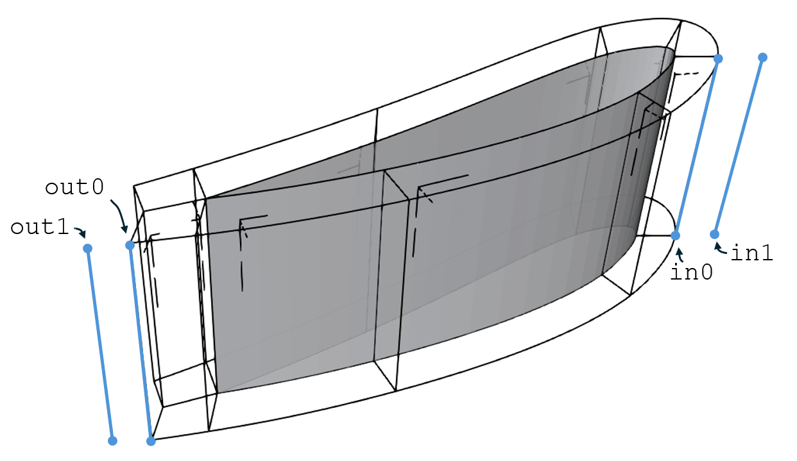
Fig. 29 Offset and base meanplane curves. The labels
in0,in1,out0, andout1correspond to the established naming convention.If the Boolean input variable
meanplaneFromBlocksisFalse, these curves are not created.Create FE-Meanplane Surfaces Extending from the Mesh Blocks
A FE-meanplane surfaces extending from the mesh blocks are created by skinning the meanplane curves.
The skinning direction corresponds to the upstream direction of the regular channel in order to maintain consistent parameter directions with the mesh blocks.
The surfaces are labeled as follows:
label + "fe_meanplane_<in/out>0"
The suffix
<in/out>indicates whether the surface belongs to the meanplane extending toward the inlet or the outlet.The creation of the extending meanplane surfaces is shown in Fig. 30.
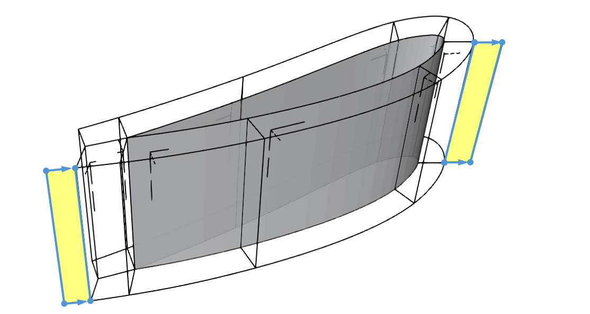
Fig. 30 Creation of the meanplane surfaces with the suffixes
_out0and_in0. The offset meanplane curves are shown in blue.Apply Conformal Mapping and Relabel Geometries
All geometries generated up to this point are defined in uvw-parameter space. By performing a conformal mapping within the regular channel, these geometries are transformed into xyz-coordinate space.
The mapping is performed using the prepared mapping object labeled
"uVw_phirMs".The mapped geometries are prefixed with the string
"xyz_".Collect FE-Meanplane Curves
The meanplane curves are stored in the list
meshBlockCurves.Create the FE-Meanplane Surfaces Connecting to the Interfaces
Two meanplane surfaces that connect the inlet and outlet interfaces to the tangentially offset meanplane curves are created using the subclass analyticSurface_inOutFeMeanplane.
The class takes the list of meanplane curves
meshBlockCurvesand the regular channel as inputs. The surfaces are labeled as follows. The strings<in/out>have the same meaning as described previously.label + "fe_meanplane_<in/out>1"
The following figure shows the four FE-meanplane surfaces together with their label suffixes.
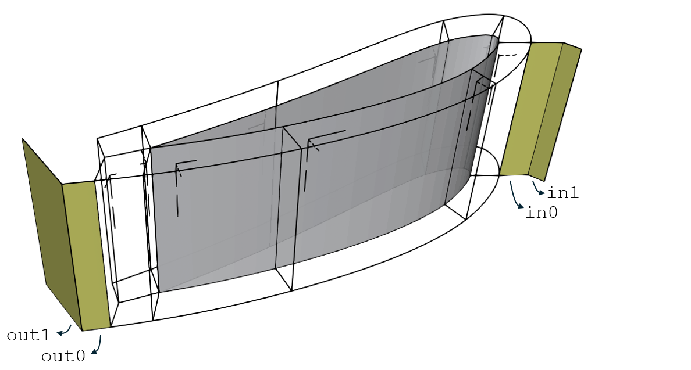
Fig. 31 FE-meanplane surfaces (yellow).
Organize Mesh Block Volumes
The mesh block volumes are organized in the list
blocksin ascending order according to their labels.Create Lists of Boundary Faces
The FE-meanplane surfaces and the surrounding surfaces of the mesh blocks are sorted into the lists
couplingFacesandmeanplaneFaces. The surfaces incouplingFacesare the mesh block faces that connect the mesh blocks to the grid channel. The surfaces inmeanplaneFacesform the periodic boundary surfaces of the complete bladed channel mesh. These include the FE-meanplane surfaces and selected mesh block surfaces.The sorting is performed by iterating over the list
blocksand evaluating the integer valuenMeanplaneFromBlocks, which specifies the number of mesh blocks that are part of the meanplane. Based on the current iterator position, the corresponding faces are appended to the two lists.The following figure shows the surfaces contained in
meanplaneFacesandcouplingFaces.
Fig. 32 Faces contained in the lists
meanplaneFacesandcouplingFaces, including FE-meanplane surfaces (yellow), mesh block meanplane surfaces (green), and coupling faces (cyan). The blade (grey) is shown for reference.Create Grid Channel
Using the lists
meanplaneFacesandcouplingFaces, the grid channel is created as a multiple bounded volume by the class multipleBoundedVolume_gridChannel.The class returns the multiple bounded volume of the grid channel together with a list containing its bounding surfaces.
The bounding surfaces are created by rotating the meanplane surfaces by the angle
360° / nBlades.The input key
orientationis passed to the constructor to account for the orientation of the blade within the regular channel. If the blade is oriented in the positive u-direction of the regular channel, the value is1. If the blade extends in the negative u-direction, the value is-1.Fig. 33 shows the bounding surfaces of the grid channel and the mesh blocks surrounding the blade.
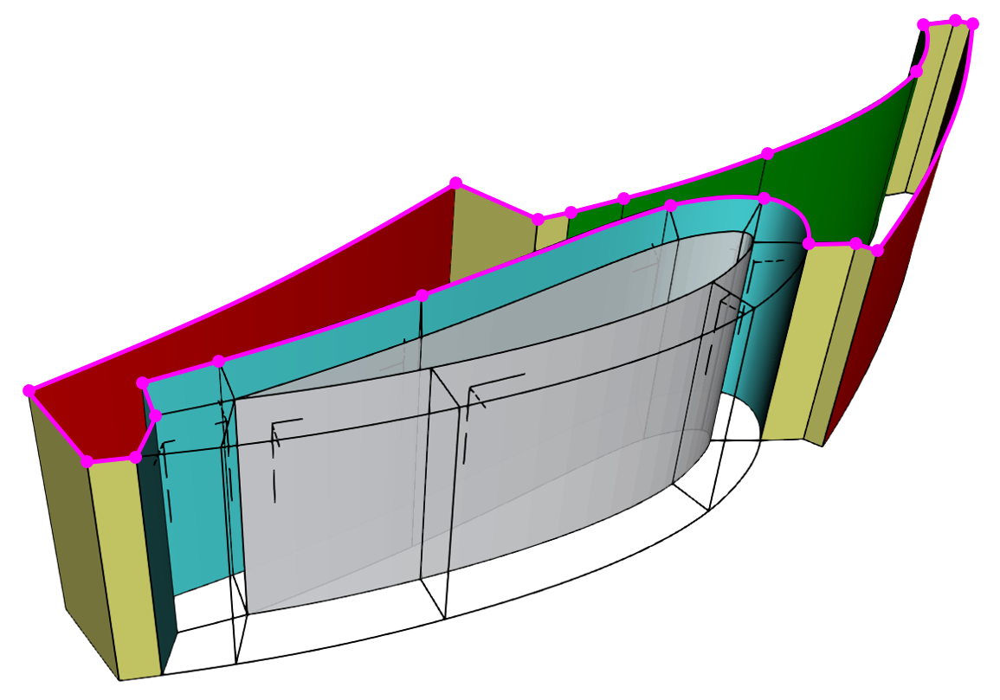
Fig. 33 Bounding surfaces of the grid channel (colored). Bounding curves of the hub surface are shown in pink. The blade (grey) is shown for reference.
The grid channel is bounded by the coupling faces (cyan) and the meanplane surfaces created as extensions of the mesh blocks (Fig. 31, yellow) on one side of the channel. On the opposite side, it is bounded by the rotated surfaces contained in
meanplaneFaces(yellow and green).The inlet and outlet surfaces (red) are created by rotating the edges of the FE-meanplane surfaces that connect to the inlet and outlet of the regular channel. The hub and shroud surfaces of the grid channel are multiple bounded surfaces defined by the edges of the boundary surfaces connected to them. The rotation angle of the surfaces is determined by the number of blades
nBladesspecified in the configuration dictionary.The multiple bounded volume
gcand the list of bounding surfacesgcFacesof the grid channel can be returned using thegetGridChannel()method of the class multipleBoundedVolume_gridChannel.The multiple bounded volume object is labeled as follows:
"xyz_" + label + "_gridChannel"
Create the Mesh Topology
The mesh topology consists of the grid channel volume and the mesh blocks stored in the list
blocks.These objects are passed to the subclass map3dTo3dGmsh_gridFromMultipleBoundedVolumeAndBlocks, together with the list of grid channel bounding surfaces
gcFacesand the blade surface in cartesian space.The following figure shows the surfaces and volumes of the mesh topology. The hub and shroud surfaces are not shown.
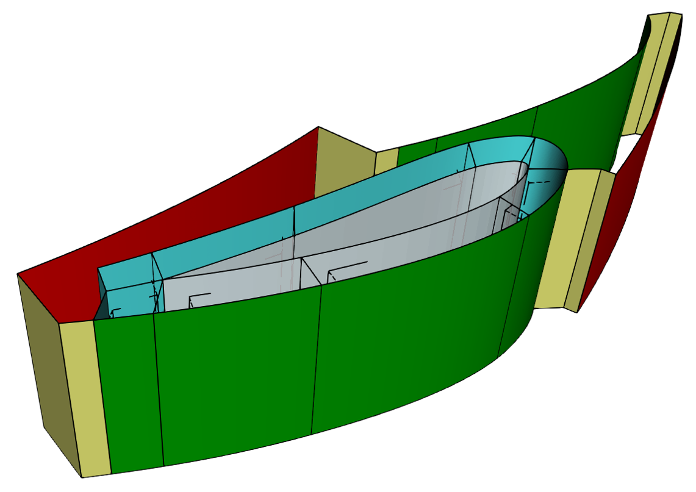
Fig. 34 Bladed channel with blade (grey), inlet and outlet surfaces (red), periodic surfaces (yellow and green), and coupling faces (cyan).
The grid channel volume is meshed using an unstructured mesh with structured layers on the hub and shroud surfaces. The number of layers can be specified using
nBoundaryLayers.The element size in the unstructured regions can be controlled using GMSH’s parameters
charLengthMaxandcharLengthMin.The edges on which mesh settings are applied are shown in Fig. 35.
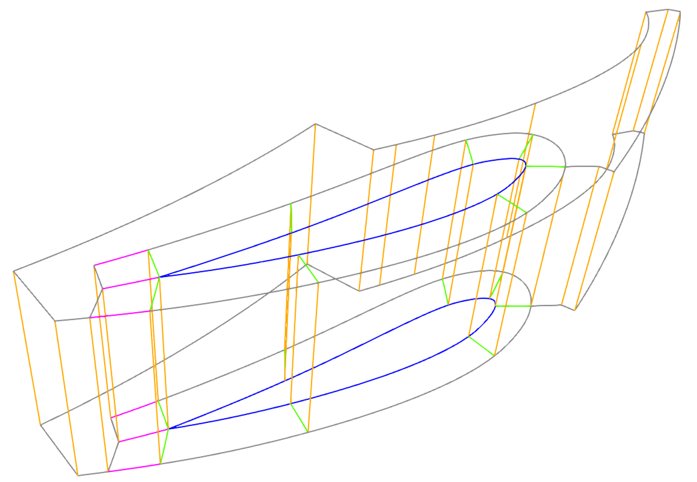
Fig. 35 Edges of the bladed channel where mesh settings are applied: hub-to-shroud edges (orange), blade edges (blue), blade-to-block edges (green), and trailing edge lines (magenta).
The number of elements in the spanwise direction (
nElementsSpanwise) is applied to the edges extending from the hub to the shroud (orange). These edges are meshed using a grading with an element size offirstElementSizeHubToShroudat the hub and shroud surfaces.The mesh blocks surrounding the blade are meshed using transfinite interpolation. The edges extending from the blade surface to the meshblock surfaces (green) are meshed with the number of elements specified by
nElementsNormaland a grading with an element size offirstElementSizeNormalBladeat the blade surface. The mesh size along the blade edge (blue) is controlled bybladeHubElementSize. This input is an object of class scaOneD_scaCurve2dOneDPointConstruct and defines the mesh size distribution along the blade surface. The scale factor can be adjusted usingbladeHubElementScale.The mesh topology is stored in the container
bVwith the following label:label + "_mesh"
A mesh resulting from this topology is shown in Fig. 13.
- fillInputList(inList)[source]
Create inputs for scaOneD_scaCurve2dOneDPointConstruct class.
Takes the input lists for the
createBlade()method and transforms them into inputs of the scaOneD_scaCurve2dOneDPointConstruct class.Creates a list with dtPoint2 objects which contain the input values from the input list and the spanwise percentage on the blade where this value is applied. The percentage is calculated from the length of the input list with a normalized index. Based on the list length the order of the scaOneD_scaCurve2dOneDPointConstruct function is calculated.
If the input list has only one parameter the outList is written so this value will be constant along the blades’ span.
- Parameters:
inList (List[float]) – List containing the input values along the blades’ span.
- Returns:
outList (List[dtPoint2[float, float]]) – Input parameter and its percenatage along the blades’ span.
order (int) – Order of the function.
{kind=link}
{kind=link}
{kind=link}
{kind=link}
{kind=link}
{kind=link}
{kind=link}
{kind=link}
{kind=link}
{kind=link}
{kind=link}
{kind=link}
{kind=link}
{kind=link}
{kind=link}
{kind=link}
{kind=link}
{kind=link}
{kind=link}
{kind=link}
{kind=link}